B3_flowkit · GPT-6 Astra · attempt Ezw6SoT
Batch fk1 · job fk1_B_EXP22004363_run1_221202_flowkit_gpt-6-astra · trial B_EXP22004363_run1_221202_flowki__Ezw6SoT. Long tool outputs are cut at 6,000 characters.
Score
0.37
0.37
Minutes
15.5
15.5
Agent cost
$5.76
$5.76
Steps
27
27
Screenshots / images
13
13
1
task prompt (instruction.md)
<environment_context> <cwd>/task</cwd> <shell>bash</shell> <current_date>2026-11-10</current_date> <timezone>Etc/UTC</timezone> <filesystem><workspace_roots><root>/task</root></workspace_roots><permission_profile type="disabled"><file_system type="unrestricted" /></permission_profile></filesystem> </environment_context>
2
user message
# Caspase-3/7 conditioned-media plate (H4 WT / PGRN-KO): analyse, conclude, recommend
## Goal
You are the analyst for this experiment. Analyse the 80-well plate acquired on 02-Dec-2022, answer the plan's question, and recommend the next step. The plan's question is whether WT progranulin-conditioned media can bring caspase activity in H4 PGRN-KO lines (E1, E3) back toward WT levels.
## Inputs (read-only, `/task/inputs/`)
| Path | Content |
|---|---|
| `/task/inputs/plan.md` | Notebook entry up to flow acquisition: purpose, rationale, materials, protocol, cytometer settings, plate maps and their highlight colours. |
| `/task/inputs/plate_layout.csv` | One row per FCS file: `file, well, sample, cell_line, camptothecin, conditioned_media`. `sample` is the 2022-12-02 plate-map label as written. `conditioned_media` is transcribed from that map's highlight colours (blue = WT 24hr, green = WT 48hr, none = no conditioned media). `camptothecin` is `not stated` where the plate map gives no treatment. |
| `/task/inputs/raw/` | 80 FCS 3.1 files (Attune NxT), `Caspase-assay-2-mlk_caspase_Group_<well>.fcs`, wells A1-F12 and G1-G8. |
## Channels
- FlowKit lists channels by the labels stored inside the FCS files, not by detector ID.
- These labels may be out of date.
- Use the plan's reagent list and cytometer settings to decide what each detector measured.
## Tools and rules
- **Save the gates.** Save the gating strategy as `/task/outputs/gates.xml` (see *Software*). Its gates must be the ones that produced `counts.csv`.
- **Output location.** Write every deliverable to `/task/outputs/`. Do not modify `/task/inputs/`.
- **Time budget.** About 5 hours.
## Deliverables (`/task/outputs/`)
### `gates.xml`
- Your gating strategy as GatingML 2.0, written with `flowkit.export_gatingml` (see *Software*). It must load with `flowkit.parse_gating_xml("/task/outputs/gates.xml")`.
### `counts.csv`
- **Columns, in order:** `file, well, population, role, parent, count, pct_of_parent`.
- **Rows:** one row per file per population, for all 80 files, with the same set of populations for every file.
- **`all_events` row:** one per file, with `population` = `all_events`, `role` = `other`, `parent` = `none` and `pct_of_parent` empty.
- **`role`** must be one of `cells`, `singlets`, `live`, `marker_positive`, `other`. Each of `cells`, `singlets`, `live` and `marker_positive` is used by exactly one population, and that population is the same in every file. `marker_positive` is the assay read-out population. `other` may be used by any number of populations.
- **`parent`** is the name of the parent population; use `all_events` for a top-level gate.
- **`count`** is an integer event count taken from FlowKit statistics on the saved gates.
- **`pct_of_parent`** = 100 x count / parent count.
### `flags.csv`
- **Columns, in order:** `file, well, issue_type, evidence, decision`.
- **Rows:** exactly one row per FCS file (80 rows). If a well has several issues, report the main one and mention the others in `evidence`.
- **`issue_type`** must be one of `none`, `clog`, `ran_dry`, `too_few_events`, `saturation`, `bad_control`, `mislabel`, `other`.
- **`decision`** must be one of `keep`, `keep_with_note`, `exclude`. Rows with `issue_type` = `none` must have `decision` = `keep`.
- **`evidence`** is required whenever `issue_type` is not `none`, and must cite at least one number from the data. It may be empty when `issue_type` = `none`.
### `condition_summary.csv`
- **Columns, in order:** `condition, wells, n_wells_used, mean, sd, metric_definition, normalisation_applied`.
- **`condition`** is a name you choose.
- **`wells`** lists the plate wells used, separated by `;`, e.g. `A1;D1`.
- **`n_wells_used`** is an integer.
- **`mean`** and **`sd`** are computed across the wells used. Leave `sd` empty when n = 1.
- **`metric_definition`** states the per-well metric, including numerator and denominator populations and units.
- **`normalisation_applied`** describes any normalisation, or says `none`.
### `figure.png`
The main result chart.
### `report.md`
Use these headings, in this order: `## Question`, `## Methods`, `## Results`, `## Conclusion`, `## Caveats`, `## Recommendation`.
### `answer.json`
```
{"question": str,
"comparisons": [{"comparison": str, "a": <condition>, "b": <condition>,
"direction": "increase"|"decrease"|"no_clear_change",
"magnitude": str, "confidence": "high"|"medium"|"low"}],
"overall_answer": "yes: ..." | "partial: ..." | "no: ...",
"assay_verdict": "fit_for_purpose"|"needs_optimisation"|"not_fit_for_purpose",
"next_action": <ACTION>,
"next_change": {"what": str, "from": str, "to": str, "why": str},
"excluded_wells": [well, ...],
"caveats": [str, ...]}
```
- **`comparisons`:** at least one. `a` and `b` must be `condition` values that appear in `condition_summary.csv`.
- **`direction`** describes `b` relative to `a`: `increase` means b > a.
- **`magnitude`:** give the size of the difference with a number and its unit.
- **`overall_answer`** must start with `yes:`, `partial:` or `no:`.
- **`next_action`** must be one of `proceed_as_planned`, `repeat_unchanged`, `repeat_with_change`, `optimise_reagent_or_setting`, `change_treatment_or_timing`, `switch_assay`, `stop`.
- `next_change`: the change you recommend, as an object: `what` (the step, reagent or condition to change), `from` (its value as run), `to` (the value you recommend) and `why`. Use empty strings if you recommend no change.
- **`excluded_wells`** must equal the set of wells with `decision` = `exclude` in `flags.csv`.
## Software (FlowKit version of this task)
- **Python 3 with FlowKit 1.2.3** (plus flowio, numpy, pandas, scipy, matplotlib, openpyxl) is installed. There is no graphical analysis program.
- **Load** each file with `flowkit.Sample(path)`. Build **one** `flowkit.GatingStrategy` for all wells, with `flowkit.Dimension` and `flowkit.gates.RectangleGate`, `PolygonGate` or `EllipsoidGate` (no quadrant or Boolean gates).
- **Gate names** must be valid XML IDs: letters, digits and underscores, starting with a letter (no spaces or `+`).
- **One gate per reported population**, named exactly as the population and nested under its parent population (the first population's gate sits at the root). A population's events are its own gate within its parent.
- **Compensation.** Your choice. Every gate dimension must state its `compensation_ref` (`"uncompensated"`, `"FCS"` for the file's own spillover matrix, or the id of a matrix you add to the strategy).
- **Channels.** FlowKit gate dimensions use the detector ID (`$PnN`, e.g. `BL1-A`), not the text label.
- **Transforms.** You may draw gates on transformed axes (for example `flowkit.transforms.LogicleTransform`, added with `add_transform` and referenced by `transformation_ref`).
- **Save** the strategy with `flowkit.export_gatingml(strategy, open("/task/outputs/gates.xml", "wb"))` and check that it reloads with `flowkit.parse_gating_xml`.
- **Counts.** `counts.csv` must be the counts these saved gates give on each file (`strategy.gate_sample(sample)`), with no per-well changes.
- **Looking at data.** Save plots as PNG files and open the image files to view them.
---
## How you work
You work in a **terminal** (bash, working directory `/task`).
- **Inputs** are in `/task/inputs/` (read-only). **Write every deliverable to `/task/outputs/`.** Only that folder is collected for grading.
- **Limits.** There is no limit on the number of actions; the only limit is the time budget above. Save `gates.xml` and your output files early and often.
3
agent
I’ll check the protocol and detector settings, inspect the wells for acquisition problems, and apply one saved gating strategy across the plate. Then I’ll compare the conditioned-media groups with their matching controls and assess whether the data support rescue toward WT levels.
tool call · exec
const results = await Promise.allSettled([
tools.exec_command({cmd:"pwd && rg --files -g 'AGENTS.md' -g '!inputs/raw/**' -g '!outputs/**' /task /installed-agent 2>/dev/null",max_output_tokens:3000}),
tools.exec_command({cmd:"cat /task/inputs/plan.md",max_output_tokens:14000}),
tools.exec_command({cmd:"cat /task/inputs/plate_layout.csv",max_output_tokens:10000}),
tools.exec_command({cmd:"python - <<'PY'\nimport flowkit as fk, inspect\nprint('FlowKit', fk.__version__)\nprint(inspect.signature(fk.Dimension))\nprint(inspect.signature(fk.gates.RectangleGate))\nprint(inspect.signature(fk.transforms.LogicleTransform))\nprint(inspect.signature(fk.GatingStrategy.gate_sample))\nPY","max_output_tokens":3000})
]); results.forEach((r,i)=>text({i,...r}));
text(ALL_TOOLS.filter(x=>/search|browse/i.test(x.name+" "+x.description)).map(x=>({name:x.name,description:x.description.slice(0,160)})).slice(0,50));
tool output
Script completed
Wall time 1.1 seconds
Output:
{"i":0,"status":"fulfilled","value":{"chunk_id":"39902d","wall_time_seconds":0.00001338,"exit_code":1,"original_token_count":2,"output":"/task\n"}}
{"i":1,"status":"fulfilled","value":{"chunk_id":"4f244d","wall_time_seconds":0.00000409,"exit_code":0,"original_token_count":1637,"output":"# EXP22004363 | 2022.11.28 Caspase Activity Assay Dev: Progranulin Conditioned Media\n\nThis is the notebook entry text up to flow acquisition on 2022-12-02. People's names have been removed.\n\n- **Tags:** Target PGRN; Technology Assay development; Model System Cell based; Methodology Flow; Cell Type H4.\n- **Plate maps:** shown below as grids (rows A-H, columns 1-12). Empty cells are blank.\n- **Highlight colours:** the notebook encodes conditioned-media treatment by highlight colour. The colours are listed at the end.\n\n## DAY 2022-11-28\n\n### Purpose\nTo determine if progranulin conditioned media can restore wild-type levels of caspase activity in H4 GRN KO cells.\n\n### Rationale\nPrevious literature evidence suggests that applying exogenous progranulin to cells can restore molecular phenotypes in progranulin deficient lines. Our previous experiment with caspase activity on H4 GRN WT and KO cells showed that GRN KO lines had increased caspase activity. This difference was enhanced after campothesin challenge in both GRN WT and KO cells ( ). In this experiment, we will determine if applying conditioned media from WT cell lines onto KO lines can reduce caspase activity closer to WT levels.\n\n### Materials\n- H4 WT cells\n- H4 PGRN KO E1\n- H4 PGRN KO E3\n- H4 media (DMEM + 10% FBS)\n- CellEvent Caspase-3/7 Green Flow Cytometry Assay Kit\n- Camptothecin\n- Plate 10k cells according to plate:\n\n| | 1 | 2 | 3 | 4 | 5 | 6 | 7 | 8 | 9 | 10 | 11 | 12 |\n|---|---|---|---|---|---|---|---|---|---|---|---|---|\n| A | WT | WT | WT | WT | WT | WT | WT | WT | WT | | | |\n| B | WT | WT | WT | WT | WT | WT | WT | WT | WT | | | |\n| C | WT | WT | WT | WT | WT | WT | WT | WT | WT | | | |\n| D | WT | WT | WT | WT | WT | WT | WT | WT | WT | | | |\n| E | E1 | E1 | E1 | E1 | E1 | E1 | E1 | E1 | E1 | | | |\n| F | E3 | E3 | E3 | E3 | E3 | E3 | E3 | E3 | E3 | | | |\n| G | | | | | | | | | Serum free media | | | |\n| H | 24 hr | | | | 48 hr | | | | | | | |\n\n- WT-330K for 33 wells-resuspend in 3300mL\n- E1 and E3-90K for 9 wells-resuspend in 900uL\n\n## DAY 2022-11-29\n- Harvest media after 24 and 48 hrs and place in 4 C until ready to use.\n\n## DAY 2022-11-30\n- Plate cells according to the following plate map and incubate at 37C:\n\n| | 1 | 2 | 3 | 4 | 5 | 6 | 7 | 8 | 9 | 10 | 11 | 12 |\n|---|---|---|---|---|---|---|---|---|---|---|---|---|\n| A | WT | WT | WT | WT | WT | WT | WT | WT | WT | WT | WT | WT |\n| B | E1 | E1 | E1 | E1 | E1 | E1 | E1 | E1 | E1 | E1 | E1 | E1 |\n| C | E3 | E3 | E3 | E3 | E3 | E3 | E3 | E3 | E3 | E3 | E3 | E3 |\n| D | WT | WT | WT | WT | WT | WT | WT | WT | WT | WT | WT | WT |\n| E | E1 | E1 | E1 | E1 | E1 | E1 | E1 | E1 | E1 | E1 | E1 | E1 |\n| F | E3 | E3 | E3 | E3 | E3 | E3 | E3 | E3 | E3 | E3 | E3 | E3 |\n| G | WT no treatment | WT no treatment | E3 no treatment | E3 no treatment | | | | | | | | |\n| H | E1 no treatment | E1 no treatment | WT (flow control) | WT (flow control) | | | | | | | | |\n\n## DAY 2022-12-01\n- Gently wash cells with DMEM.\n- Replace media with conditioned media collected previously. Conditioned media added at 9AM\n\n## DAY 2022-12-02\n- After 24 hours, add campthothesin according to the plate map:\n\n| | 1 | 2 | 3 | 4 | 5 | 6 | 7 | 8 | 9 | 10 | 11 | 12 |\n|---|---|---|---|---|---|---|---|---|---|---|---|---|\n| A | WT 10uM | WT 5uM | WT 2uM | WT DMSO | WT 10uM | WT 5uM | WT 2uM | WT DMSO | WT 10uM | WT 5uM | WT 2uM | WT DMSO |\n| B | E1 10uM | E1 5uM | E1 2uM | E1 DMSO | E1 10uM | E1 5uM | E1 2uM | E1 DMSO | E1 10uM | E1 5uM | E1 2uM | E1 DMSO |\n| C | E3 10uM | E3 5uM | E3 2uM | E3 DMSO | E3 10uM | E3 5uM | E3 2uM | E3 DMSO | E3 10uM | E3 5uM | E3 2uM | E3 DMSO |\n| D | WT 10uM | WT 5uM | WT 2uM | WT DMSO | WT 10uM | WT 5uM | WT 2uM | WT DMSO | WT 10uM | WT 5uM | WT 2uM | WT DMSO |\n| E | E1 10uM | E1 5uM | E1 2uM | E1 DMSO | E1 10uM | E1 5uM | E1 2uM | E1 DMSO | E1 10uM | E1 5uM | E1 2uM | E1 DMSO |\n| F | E3 10uM | E3 5uM | E3 2uM | E3 DMSO | E3 10uM | E3 5uM | E3 2uM | E3 DMSO | E3 10uM | E3 5uM | E3 2uM | E3 DMSO |\n| G | WT no treatment (no stain) | WT no treatment | E3 no treatment | E3 no treatment | E1 no treatment | E1 no treatment | WT (caspase stain only) | WT (L/D stain only) | | | | |\n| H | | | | | | | | | | | | |\n\n- Blue highlight=treated with WT 24hr conditoned media\n- Green highlight= treated with WT 48hr conditioned media\n- No highlight= no conditioned media treatment\n- Incubate and run flow.\n- Aspirate media and wash with PBS\n- Add 150uL trypsin incubate for 5min\n- Add 75uL FBS and collect into 96w round bottom plate\n- spin down 200xg for 5min\n- Add 200uL of Cell Event Caspase 3/7 Detection reagent (1:1000) in flow staining buffer. Incubate for 30min at 37C\n- Prepare SYTOX AAdvanced Dead Cell Stain at 100uM concentration by adding 1000uL DMSO to stain. Mix well\n- During the final 5 minutes of 30min Caspase incubation add 2uL of the 100uM Dead Cell stain (final concentration of 1uM)\n- Analyze the samples without fixing.\n\nFlow cytometer settings: FSC-20; SSC-290; BL1 (caspase)-225, BL2 (AAddvanced Dead Cell Stain)-350\n\n## Plate-map cell colours (from the notebook's highlighting; the plain-text maps above drop colour)\n\n### Plate map of 2022-11-28\n- row A: WT [light cyan #C2EDF8] x8 (cols 1-8) | WT (col 9, no highlight) | - | - | -\n- row B: WT [light cyan #C2EDF8] x8 (cols 1-8) | WT (col 9, no highlight) | - | - | -\n- row C: WT [light cyan #C2EDF8] x8 (cols 1-8) | WT (col 9, no highlight) | - | - | -\n- row D: WT [light green #E8F9CF] x8 (cols 1-8) | WT (col 9, no highlight) | - | - | -\n- row E: E1 [light green #E8F9CF] x8 (cols 1-8) | E1 (col 9, no highlight) | - | - | -\n- row
… [9,142 more characters not shown]tool call · exec
const r=await Promise.allSettled([
tools.exec_command({cmd:"ls -lah /task /task/inputs /task/inputs/raw && python - <<'PY'\nimport flowkit as fk, numpy as np, inspect\np='/task/inputs/raw/Caspase-assay-2-mlk_caspase_Group_A1.fcs'\ns=fk.Sample(p)\nprint(s.channels.to_string(index=False))\nprint('Metadata:',s.get_metadata())\nprint('Raw shape:',s.get_events(source='raw').shape)\nprint('Quantiles by channel')\nx=s.get_events(source='raw')\nfor i,c in enumerate(s.pnn_labels):\n print(c, np.percentile(x[:,i], [0,1,10,50,90,99,100]))\nprint('Polygon',inspect.signature(fk.gates.PolygonGate))\nprint('Matrix',inspect.signature(fk.Matrix))\nprint('Results methods', [k for k in dir(fk._models.gating_results.GatingResults) if not k.startswith('_')])\nPY",max_output_tokens:13000}),
tools.web__run({search_query:[{q:'site.thermofisher.com CellEvent Caspase 3/7 Green flow cytometry SYTOX AADvanced C10427 compensation manual'}],response_length:"long"})
]);r.forEach((v,i)=>text({i,...v}));
tool output
Script completed
Wall time 0.9 seconds
Output:
Warning: truncated output (original token count: 10810)
Total output lines: 2
{"i":0,"status":"fulfilled","value":{"chunk_id":"6b9494","wall_time_seconds":0.560521071,"exit_code":0,"original_token_count":3281,"output":"/task:\ntotal 16K\ndrwxr-xr-x 4 root root 4.0K Nov 10 16:59 .\ndrwxr-xr-x 21 root root 4.0K Nov 10 17:07 ..\ndr-xr-xr-x 3 root root 4.0K Nov 10 16:58 inputs\ndrwxr-xr-x 2 root root 4.0K Nov 10 16:59 outputs\n\n/task/inputs:\ntotal 28K\ndr-xr-xr-x 3 root root 4.0K Nov 10 16:58 .\ndrwxr-xr-x 4 root root 4.0K Nov 10 16:59 ..\n-r--r--r-- 1 root root 6.4K Nov 10 16:58 plan.md\n-r--r--r-- 1 root root 6.8K Nov 10 16:58 plate_layout.csv\ndr-xr-xr-x 2 root root 4.0K Nov 10 16:58 raw\n\n/task/inputs/raw:\ntotal 111M\ndr-xr-xr-x 2 root root 4.0K Nov 10 16:58 .\ndr-xr-xr-x 3 root root 4.0K Nov 10 16:58 ..\n-r--r--r-- 1 root root 1.6M Nov 10 16:58 Caspase-assay-2-mlk_caspase_Group_A1.fcs\n-r--r--r-- 1 root root 2.2M Nov 10 16:58 Caspase-assay-2-mlk_caspase_Group_A10.fcs\n-r--r--r-- 1 root root 2.2M Nov 10 16:58 Caspase-assay-2-mlk_caspase_Group_A11.fcs\n-r--r--r-- 1 root root 1.6M Nov 10 16:58 Caspase-assay-2-mlk_caspase_Group_A12.fcs\n-r--r--r-- 1 root root 2.0M Nov 10 16:58 Caspase-assay-2-mlk_caspase_Group_A2.fcs\n-r--r--r-- 1 root root 2.4M Nov 10 16:58 Caspase-assay-2-mlk_caspase_Group_A3.fcs\n-r--r--r-- 1 root root 1.7M Nov 10 16:58 Caspase-assay-2-mlk_caspase_Group_A4.fcs\n-r--r--r-- 1 root root 1.8M Nov 10 16:58 Caspase-assay-2-mlk_caspase_Group_A5.fcs\n-r--r--r-- 1 root root 1.7M Nov 10 16:58 Caspase-assay-2-mlk_caspase_Group_A6.fcs\n-r--r--r-- 1 root root 1.9M Nov 10 16:58 Caspase-assay-2-mlk_caspase_Group_A7.fcs\n-r--r--r-- 1 root root 1.2M Nov 10 16:58 Caspase-assay-2-mlk_caspase_Group_A8.fcs\n-r--r--r-- 1 root root 2.0M Nov 10 16:58 Caspase-assay-2-mlk_caspase_Group_A9.fcs\n-r--r--r-- 1 root root 961K Nov 10 16:58 Caspase-assay-2-mlk_caspase_Group_B1.fcs\n-r--r--r-- 1 root root 2.0M Nov 10 16:58 Caspase-assay-2-mlk_caspase_Group_B10.fcs\n-r--r--r-- 1 root root 2.1M Nov 10 16:58 Caspase-assay-2-mlk_caspase_Group_B11.fcs\n-r--r--r-- 1 root root 1.6M Nov 10 16:58 Caspase-assay-2-mlk_caspase_Group_B12.fcs\n-r--r--r-- 1 root root 1.7M Nov 10 16:58 Caspase-assay-2-mlk_caspase_Group_B2.fcs\n-r--r--r-- 1 root root 2.0M Nov 10 16:58 Caspase-assay-2-mlk_caspase_Group_B3.fcs\n-r--r--r-- 1 root root 1022K Nov 10 16:58 Caspase-assay-2-mlk_caspase_Group_B4.fcs\n-r--r--r-- 1 root root 915K Nov 10 16:58 Caspase-assay-2-mlk_caspase_Group_B5.fcs\n-r--r--r-- 1 root root 1.6M Nov 10 16:58 Caspase-assay-2-mlk_caspase_Group_B6.fcs\n-r--r--r-- 1 root root 1.8M Nov 10 16:58 Caspase-assay-2-mlk_caspase_Group_B7.fcs\n-r--r--r-- 1 root root 1.4M Nov 10 16:58 Caspase-assay-2-mlk_caspase_Group_B8.fcs\n-r--r--r-- 1 root root 1.8M Nov 10 16:58 Caspase-assay-2-mlk_caspase_Group_B9.fcs\n-r--r--r-- 1 root root 906K Nov 10 16:58 Caspase-assay-2-mlk_caspase_Group_C1.fcs\n-r--r--r-- 1 root root 811K Nov 10 16:58 Caspase-assay-2-mlk_caspase_Group_C10.fcs\n-r--r--r-- 1 root root 1017K Nov 10 16:58 Caspase-assay-2-mlk_caspase_Group_C11.fcs\n-r--r--r-- 1 root root 1.2M Nov 10 16:58 Caspase-assay-2-mlk_caspase_Group_C12.fcs\n-r--r--r-- 1 root root 1.3M Nov 10 16:58 Caspase-assay-2-mlk_caspase_Group_C2.fcs\n-r--r--r-- 1 root root 1.1M Nov 10 16:58 Caspase-assay-2-mlk_caspase_Group_C3.fcs\n-r--r--r-- 1 root root 928K Nov 10 16:58 Caspase-assay-2-mlk_caspase_Group_C4.fcs\n-r--r--r-- 1 root root 960K Nov 10 16:58 Caspase-assay-2-mlk_caspase_Group_C5.fcs\n-r--r--r-- 1 root root 1.1M Nov 10 16:58 Caspase-assay-2-mlk_caspase_Group_C6.fcs\n-r--r--r-- 1 root root 1.2M Nov 10 16:58 Caspase-assay-2-mlk_caspase_Group_C7.fcs\n-r--r--r-- 1 root root 953K Nov 10 16:58 Caspase-assay-2-mlk_caspase_Group_C8.fcs\n-r--r--r-- 1 root root 1.2M Nov 10 16:58 Caspase-assay-2-mlk_caspase_Group_C9.fcs\n-r--r--r-- 1 root root 1.5M Nov 10 16:58 Caspase-assay-2-mlk_caspase_Group_D1.fcs\n-r--r--r-- 1 root root 2.0M Nov 10 16:58 Caspase-assay-2-mlk_caspase_Group_D10.fcs\n-r--r--r-- 1 root root 2.2M Nov 10 16:58 Caspase-assay-2-mlk_caspase_Group_D11.fcs\n-r--r--r-- 1 root root 1.5M Nov 10 16:58 Caspase-assay-2-mlk_caspase_Group_D12.fcs\n-r--r--r-- 1 root root 2.2M Nov 10 16:58 Caspase-assay-2-mlk_caspase_Group_D2.fcs\n-r--r--r-- 1 root root 2.3M Nov 10 16:58 Caspase-assay-2-mlk_caspase_Group_D3.fcs\n-r--r--r-- 1 root root 1.4M Nov 10 16:58 Caspase-assay-2-mlk_caspase_Group_D4.fcs\n-r--r--r-- 1 root root 1.5M Nov 10 16:58 Caspase-assay-2-mlk_caspase_Group_D5.fcs\n-r--r--r-- 1 root root 1.7M Nov 10 16:58 Caspase-assay-2-mlk_caspase_Group_D6.fcs\n-r--r--r-- 1 root root 1.9M Nov 10 16:58 Caspase-assay-2-mlk_caspase_Group_D7.fcs\n-r--r--r-- 1 root root 1.4M Nov 10 16:58 Caspase-assay-2-mlk_caspase_Group_D8.fcs\n-r--r--r-- 1 root root 1.8M Nov 10 16:58 Caspase-assay-2-mlk_caspase_Group_D9.fcs\n-r--r--r-- 1 root root 968K Nov 10 16:58 Caspase-assay-2-mlk_caspase_Group_E1.fcs\n-r--r--r-- 1 root root 2.1M Nov 10 16:58 Caspase-assay-2-mlk_caspase_Group_E10.fcs\n-r--r--r-- 1 root root 2.2M Nov 10 16:58 Caspase-assay-2-mlk_caspase_Group_E11.fcs\n-r--r--r-- 1 root root 1.4M Nov 10 16:58 Caspase-assay-2-mlk_caspase_Group_E12.fcs\n-r--r--r-- 1 root root 1.8M Nov 10 16:58 Caspase-assay-2-mlk_caspase_Group_E2.fcs\n-r--r--r-- 1 root root 2.0M Nov 10 16:58 Caspase-assay-2-mlk_caspase_Group_E3.fcs\n-r--r--r-- 1 root root 960K Nov 10 16:58 Caspase-assay-2-mlk_caspase_Group_E4.fcs\n-r--r--r-- 1 root root 966K Nov 10 16:58 Caspase-assay-2-mlk_caspase_Group_E5.fcs\n-r--r--r-- 1 root root 1.7M Nov 10 16:58 Caspase-assay-2-mlk_caspase_Group_E6.fcs\n-r--r--r-- 1 root root 2.0M Nov 10 16:58 Caspase-assay-2-mlk_caspase_Group_E7.fcs\n-r--r--r-- 1 root root 806K Nov 10 16:58 Caspase-assay-2-mlk_caspase_Group_E8.fcs\n-r--r--r-- 1 root root 1.5M Nov 10 16:58 Caspase-assay-2-mlk_caspase_Group_E9.fcs\n-r--r--r-- 1 root root 598K Nov 10 16:58 Caspase-assay-2-mlk_caspase_
… [33,706 more characters not shown]tool call · exec
text(await tools.exec_command({cmd:"mkdir -p /task/outputs && cat > /task/outputs/explore.py <<'PY'\nfrom pathlib import Path\nimport numpy as np\nimport pandas as pd\nimport matplotlib\nmatplotlib.use('Agg')\nimport matplotlib.pyplot as plt\nimport flowkit as fk\n\nROOT=Path('/task'); OUT=ROOT/'outputs'\nlayout=pd.read_csv(ROOT/'inputs/plate_layout.csv')\nrng=np.random.default_rng(431)\nsamples={}; summaries=[]\nfor row in layout.itertuples():\n s=fk.Sample(str(ROOT/'inputs/raw'/row.file)); samples[row.well]=s\n x=s.get_events(source='raw'); md=s.get_metadata(); t=x[:,0]\n d={'well':row.well,'file':row.file,'n':len(x),'date':md['date'],'wellid':md['wellid'],'btim':md['btim'],'etim':md['etim'],'duration_s':float(t.max()-t.min()),'tmin_s':float(t.min()),'tmax_s':float(t.max()),'max_gap_s':np.max(np.diff(t)), 'n_backward_time':int((np.diff(t)<0).sum()),'lost':md['lost'],'coincident':md.get('#coincidentcount'),'volume':md.get('vol'),'spillover':md.get('spillover')}\n bins=np.linspace(t.min(),t.max()+1e-6,17); h=np.histogram(t,bins)[0]\n d.update({'min_bin_events':h.min(),'max_bin_events':h.max(),'bin_cv':h.std()/h.mean(),'last_first_rate_ratio':h[-3:].mean()/h[:3].mean()})\n for k in ['FSC-A','SSC-A','FSC-H','FSC-W','BL1-A','BL2-A']:\n v=x[:,s.pnn_labels.index(k)]\n for q in [0,1,5,25,50,75,95,99,100]:d[f'{k}_q{q}']=np.percentile(v,q)\n d[f'{k}_sat_pct']=100*(v>=1048575).mean()\n summaries.append(d)\npd.DataFrame(summaries).to_csv(OUT/'raw_qc.csv',index=False)\n\nfor typ in ['scatter','doublets','fluorescence','time']:\n fig,axs=plt.subplots(7,12,figsize=(24,14),squeeze=False)\n for ax in axs.flat:ax.set_visible(False)\n for row in layout.itertuples():\n ax=axs[ord(row.well[0])-65,int(row.well[1:])-1]; ax.set_visible(True)\n s=samples[row.well]; x=s.get_events(source='raw'); z=x[rng.choice(len(x),min(len(x),2200),replace=False)]\n if typ=='scatter':\n ax.scatter(z[:,1],z[:,2],s=.5,alpha=.3,rasterized=True)\n ax.set_xscale('symlog',linthresh=10000);ax.set_yscale('symlog',linthresh=10000);ax.set_xlim(2e4,1.1e6);ax.set_ylim(500,1.1e6)\n elif typ=='doublets':\n ax.scatter(z[:,1],z[:,5],s=.5,alpha=.3,rasterized=True)\n ax.set_xlim(0,1.05e6);ax.set_ylim(0,6e5)\n elif typ=='fluorescence':\n z=z[(z[:,1]>1e5)&(z[:,2]>2e4)]\n ax.scatter(z[:,3],z[:,4],s=.6,alpha=.35,rasterized=True)\n ax.set_xscale('symlog',linthresh=100);ax.set_yscale('symlog',linthresh=1000);ax.set_xlim(-300,2e5);ax.set_ylim(-2000,1.2e6)\n else:\n t=x[:,0];bins=np.linspace(t.min(),t.max(),33);h,edges=np.histogram(t,bins);centers=(edges[1:]+edges[:-1])/2\n ax.plot(centers,h/np.diff(edges),lw=.7)\n ax.set_ylim(0,max(h/np.diff(edges))*1.15);ax.set_xlim(0,17)\n ax.set_title(row.well,fontsize=8,pad=2);ax.tick_params(labelsize=5)\n fig.suptitle({'scatter':'All events: FSC-A vs SSC-A','doublets':'All events: FSC-A (x) vs FSC-H (y)','fluorescence':'Exploratory cells (FSC-A > 100k, SSC-A > 20k): BL1-A (x) vs BL2-A (y)','time':'Acquisition event rate (events/s) vs time (s)'}[typ],fontsize=15)\n fig.tight_layout(rect=[0,0,1,.97]);fig.savefig(OUT/f'explore_{typ}.png',dpi=145);plt.close(fig)\n\nfig,axs=plt.subplots(3,8,figsize=(24,10))\nfor j,w in enumerate([f'G{i}' for i in range(1,9)]):\n s=samples[w]; x=s.get_events(source='raw');z=x[rng.choice(len(x),min(len(x),6000),replace=False)]\n axs[0,j].scatter(z[:,1],z[:,2],s=.5,alpha=.25); axs[0,j].set_xscale('symlog',linthresh=10000);axs[0,j].set_yscale('symlog',linthresh=10000);axs[0,j].set_xlim(2e4,1.1e6);axs[0,j].set_ylim(500,1.1e6)\n z=z[(z[:,1]>1e5)&(z[:,2]>2e4)]\n axs[1,j].scatter(z[:,3],z[:,4],s=1,alpha=.3);axs[1,j].set_xscale('symlog',linthresh=100);axs[1,j].set_yscale('symlog',linthresh=1000);axs[1,j].set_xlim(-300,2e5);axs[1,j].set_ylim(-2000,1.2e6)\n v=x[(x[:,1]>1e5)&(x[:,2]>2e4),3]\n axs[2,j].hist(np.arcsinh(v/100),bins=100,density=True,histtype='step');axs[2,j].set_xlim(-2,8)\n axs[0,j].set_title(w+' '+layout.set_index('well').loc[w,'sample'].replace(' no treatment','\\nuntreated').replace(' stain',''),fontsize=9)\nfor i in range(3):\n for ax in axs[i]:ax.tick_params(labelsize=7)\naxs[0,0].set_ylabel('SSC-A');axs[1,0].set_ylabel('BL2-A (SYTOX)');axs[2,0].set_ylabel('Density')\nfor ax in axs[2]:ax.set_xlabel('asinh(BL1-A / 100)')\nfig.tight_layout();fig.savefig(OUT/'explore_controls.png',dpi=160);plt.close(fig)\nprint(pd.DataFrame(summaries)[['well','n','duration_s','max_gap_s','bin_cv','last_first_rate_ratio','FSC-A_sat_pct','SSC-A_sat_pct','BL1-A_sat_pct','BL2-A_sat_pct']].to_string(index=False))\nPY\npython /task/outputs/explore.py","max_output_tokens":6500,"yield_time_ms":1000}));
text(await tools.web__run({open:[{ref_id:"https://tools.thermofisher.com/content/sfs/manuals/cellevent_caspase_3_7_grn_flow_cytometry_assay_kit_man.pdf"}],response_length:"long"}));
tool output
Script completed
Wall time 1.6 seconds
Output:
{"chunk_id":"23b47b","wall_time_seconds":1.00117067,"session_id":69780,"original_token_count":0,"output":""}
Internal Error ()
citeturn1view0 [wordlim: 200] Source: open({"ref_id":"https://tools.thermofisher.com/content/sfs/manuals/cellevent_caspase_3_7_grn_flow_cytometry_assay_kit_man.pdf","lineno":null});
Failed to fetch https://tools.thermofisher.com/content/sfs/manuals/cellevent_caspase_3_7_grn_flow_cytometry_assay_kit_man.pdf: (403) Forbiddentool call · exec
const r=await Promise.allSettled([
tools.exec_command({cmd:"python - <<'PY'\nfrom pathlib import Path\nfor p in [Path('/AGENTS.md'),Path('/task/AGENTS.md')]:\n if p.exists(): print(p, p.read_text())\nPY",max_output_tokens:2000}),
tools.web__run({open:[{ref_id:"https://www.thermofisher.com/TFS-Assets/LSG/manuals/cellevent_caspase_3_7_grn_flow_cytometry_assay_kit_man.pdf"}],search_query:[{q:'site.thermofisher.com Attune NxT blue laser BL2 574/26 SYTOX AADvanced 695/40 BL3 BRV6Y'}],response_length:"long"}),
tools.write_stdin({session_id:69780,chars:"",yield_time_ms:1000,max_output_tokens:6000})
]);r.forEach((v,i)=>text({i,...v}));
tool output
Script completed
Wall time 5.0 seconds
Output:
{"i":0,"status":"fulfilled","value":{"chunk_id":"6a42f3","wall_time_seconds":0.00000356,"exit_code":0,"original_token_count":0,"output":""}}
{"i":1,"status":"fulfilled","value":"Reagent Selection Guide for the Attune Flow Cytometers - US (https://www.thermofisher.com/us/en/home/life-science/cell-analysis/flow-cytometry/flow-cytometers/attune-acoustic-focusing-flow-cytometer/reagent-selection-guide-attune-flow-cytometer.html)\nciteturn2search0 [wordlim: 200] Crawled: 6 days ago; ## Blue laser (488 nm) reagents ... Emission filter | 530/30 nm | 574/26 nm | 590/40 nm | 695/40 nm | 780/60 nm ... ▪ SYTOX AADVanced | ▪ 7-AAD ... 574/26 | BL2 | PE\n\n## Blue laser (488 nm) reagents\n\nColor | Green | Orange | Orange | Far Red | Near IR\nEmission filter | 530/30 nm | 574/26 nm | 590/40 nm | 695/40 nm | 780/60 nm\nChannel | BL1 | BL2\n(without yellow laser present) | BL2\n(with yellow laser present) | BL3 | BL4\nCompatible fluorescent proteins | ▪ eGFP\n▪ Emerald\n▪ eYFP | ▪ eYFP\n▪ mCitrine\n▪ Venus | | | \nAntibody labels | ▪ Alexa Fluor 488\n▪ FITC | ▪ Alexa Fluor 546\n▪ Qdot 565\n▪ Qdot 585\n▪ PE | ▪ PE-Alexa Fluor 610\n▪ PE-Texas Red\n▪ Qdot 585\n▪ PE | ▪ PE-Alexa Fluor 700\n▪ PE-Cy5.5\n▪ PerCP\n▪ PerCP-Cy5.5\n▪ Qdot 705\n▪ Tri-Color | ▪ Pe-Cy7\n▪ PE-Alexa Fluor 750\n▪ Qdot 800\nViability dyes (compatible with fixation) | ▪ LIVE/DEAD Fixable Green | | ▪ LIVE/DEAD Fixable Red | | \nViability dyes (non-fixed cells) | ▪ SYTOX Green | ▪ PI\n▪ SYTOX Orange | ▪ 7-AAD\n▪ PI\n▪ SYTOX Orange\n▪ SYTOX AADVanced | ▪ 7-AAD\n▪ PI\n▪ SYTOX AADVanced | \nDNA content/\ncell cycle dyes (live cells) | ▪ Vybrant DyeCycle Green\n | ▪ Vybrant DyeCycle Orange | | | ▪ Vybrant DyeCycle Ruby\nDNA content/\ncell cycle dyes (fixed cells) | | | ▪ FxCycle PI/Rnase | | \nApoptosis dyes | ▪ Annexin V AF488\n▪ MitoProbe JC-1\n▪ CellEvent Caspase-3/7 Green\n▪ anti-PARP-FITC\n▪ YO-PRO-1 iodide\n▪ APO-BrdU TUNEL - Alexa Fluor 488\n▪ MitoProbe Transition Pore\n▪ MitoProbe DiOC_{2}(3)\n▪ Annexin V FITC | ▪ Annexin V PE\n▪ TMRE\n▪ TMRM\n▪ MitoProbe JC-1 | ▪ Annexin V PE\n▪ TMRE\n▪ TMRM | | \nCell proliferation | ▪ Click-iT Plus Edu Alexa Fluor 488\n▪ CellTrace CFSE | | | | \nROS detection | CellROX Green | | | | \nPhagocytosis | ▪ pHrodo Green E. coli BioParticles\n▪ pHrodo Green S. aureus BioParticles | ▪ pHrodo Red E. coli BioParticles\n▪ pHrodo Red Phagocytosis | | | \n\n\nBlue/red/violet 6 configuration\n\nExcitation laser | Emission filter (nm) | Channel | Antibody labels | Compatible fluorescent proteins\n--- | --- | --- | --- | ---\nViolet–405 nm | 440/50 | VL1 | Super Bright 645\nSuper Bright 436\neFluor 450\nVioBlue\nBrilliant Violet 421\nPacific Blue\nBD Horizon V450 | Azurite\nCerulean\neBFP\neCFP\nmTurquoise\nSirius\n512/25 | VL2 | eFluor 506\nVioGreen\nBrilliant Violet 510\nPacific Green\nBD Horizon V500 | T-Sapphire\nCFP\nvGFP\n603/48 | VL3 | Super Bright 600\nQdot 605\nPacific Orange\nBrilliant Violet 605 | \n660/20 | VL4 | Super Bright 645\nBrilliant Violet 650 | \n710/50 | VL5 | Super Bright 702\nBrilliant Violet 711\nQdot 705 | \n780/60 | VL6 | Super Bright 786\nBrilliant Violet 786 | \nBlue–488 nm | 530/30 | BL1 | Alexa Fluor 488\nFITC | eGFP\nEmerald\neYFP\n574/26 | BL2 | PE\nAlexa Fluor 546\nPE-Alexa Fluor 610\nPE-Texas Red\nPE-eFluor 610 | eYFP\nmCitrine\nVenus\n695/40 | BL3 | PE-Alexa Fluor 700\nPE-Cy5.5\nPerCP-Cy5.5\nPerCP-eFluor 710\nQdot 705 | \n--------------------------------------------------------------------------------\nAttune™ NxT Acoustic Focusing Cytometer User Guide (Pub. no. 100024235) (https://documents.thermofisher.com/TFS-Assets/LSG/manuals/100024235_AttuneNxT_HW_UG.pdf)\nciteturn2search12 [wordlim: 200] Published: 10.9 years ago; where <C> is the first letter of each laser color (Blue, Red, Violet, or Yellow) and an X in the name indicates that one of the lasers is not present. ... <th>BXXX</th><th>BRXX</th><th>BVXX</th><th>BYXX</th><th>BRVX</th><th>BVYX</th><th>BRVY</th> ... <td><b>574/26</b></td> ... <td><b>695/40</b></td>\n<td>PE-Cy5.5, PE-AF700, PerCP-Cy5.5, PerCP, SYTOX AADvanced</td>\n<td>X</td><td>X</td><td>X</td><td>X</td><td>X</td><td>X</td><td>X</td>\n</tr>\n<tr>\n<td><b>BL2</b></td>\n<td>Band Pass</td>\n<td><b>574/26</b></td>\n<td>RPE, Alexa Fluor 568, PI, SYTOX Orange, DyeCycle Orange</td>\n<td>X</td><td>X</td><td>X</td><td></td><td>X</td><td></td><td></td>\n</tr>\n<tr>\n<td><b>BL2(Y)</b></td>\n<td>Band Pass</td>\n<td><b>590/40</b></td>\n<td>PE-Texas Red, PE-AF 610, PI, Fixable Red</td>\n<td></td><td></td><td></td><td>X</td><td></td><td>X</td><td>X</td>\n</tr>\n<tr>\n<td><b>BL3</b></td>\n<td>Band Pass</td>\n<td><b>695/40</b></td>\n<td>PE-Cy5.5, PE-AF700, PerCP-Cy5.5, PerCP, SYTOX AADvanced</td>\n<td>X</td><td>X</td><td>X</td><td></td><td>X</td><td></td><td></td>\n</tr>\n<tr>\n<td><b>BL3(Y)</b></td>\n<td>Band Pass</td>\n<td><b>695/40</b></td>\n<td>PerCP, PerCP-Cy5.5, PE-AF 700</td>\n<td></td><td></td><td></td><td>X</td><td></td><td>X</td><td>X</td>\n</tr>\n<tr>\n<td><b>BL4</b></td>\n<td>Band Pass</td>\n<td><b>780/60</b></td>\n<td>PE-Cy7, Qdot 800, DyeCycle Ruby</td>\n<td>X</td><td>X</td><td>X</td><td></td><td>X</td><td></td><td></td>\n--------------------------------------------------------------------------------\nUSER GUIDE\n \nAttune™ NxT Acoustic Focusing Cytomet (https://assets.thermofisher.com/TFS-Assets/LSG/manuals/100024235_AttuneNxT_HW_UG.pdf)\nciteturn2search13 [wordlim: 200] Published: 2.2 years ago; Attune™ NxT Acoustic Focusing Cytometer. ... SYTOX™ Blue ... BVY, BR, ... 574/26 ... 695/40 ... *Instrument configuration: B = Blue laser, V = Violet laser, R = Red laser, Y = Yellow laser\nThe table below lists the filters and fluorophores for each configuration of the \nAttune™ NxT Acoustic Focusing Cytometer. \nOptics \n \nFilters and \nfluorophores \n \nExcit
… [17,489 more characters not shown]7
agent
The protocol identifies BL1 as the caspase readout, despite its old “AAV-GFP” file label; BL2 records the viability stain. I’m using the acquisition-day plate map for the media assignments because it differs from the earlier map. Next I’m checking the controls and acquisition traces before fixing the gates.
tool call · exec
const r=await Promise.allSettled([
tools.exec_command({cmd:"ls -lh /task/outputs && python - <<'PY'\nimport pandas as pd\nx=pd.read_csv('/task/outputs/raw_qc.csv')\nprint(x[['well','n','duration_s','max_gap_s','bin_cv','last_first_rate_ratio','FSC-A_sat_pct','SSC-A_sat_pct','BL1-A_sat_pct','BL2-A_sat_pct']].round(3).to_string(index=False))\nprint('dates', x.date.unique(), 'identity spillover?', x.spillover.nunique())\nPY",max_output_tokens:5500}),
tools.write_stdin({session_id:69780,chars:"",yield_time_ms:1000,max_output_tokens:6000})
]);r.forEach((v,i)=>text({i,...v}));
const im=await tools.view_image({path:"/task/outputs/explore_scatter.png"});image(im.image_url);
tool output
Script completed Wall time 0.3 seconds Output:
{"i":0,"status":"fulfilled","value":{"chunk_id":"31b640","wall_time_seconds":0.043657563,"exit_code":0,"original_token_count":2649,"output":"total 6.1M\n-rw-r--r-- 1 root root 4.3K Nov 10 17:09 explore.py\n-rw-r--r-- 1 root root 896K Nov 10 17:09 explore_controls.png\n-rw-r--r-- 1 root root 1.2M Nov 10 17:09 explore_doublets.png\n-rw-r--r-- 1 root root 1.3M Nov 10 17:09 explore_fluorescence.png\n-rw-r--r-- 1 root root 2.0M Nov 10 17:09 explore_scatter.png\n-rw-r--r-- 1 root root 687K Nov 10 17:09 explore_time.png\n-rw-r--r-- 1 root root 88K Nov 10 17:09 raw_qc.csv\nwell n duration_s max_gap_s bin_cv last_first_rate_ratio FSC-A_sat_pct SSC-A_sat_pct BL1-A_sat_pct BL2-A_sat_pct\n A1 31328 15.966 0.010 0.126 0.826 0.846 0.769 0.0 0.013\n A2 40169 16.691 0.006 0.136 0.914 0.570 0.695 0.0 0.000\n A3 47337 16.836 0.007 0.136 0.913 0.429 0.608 0.0 0.000\n A4 33079 16.618 0.012 0.143 1.045 0.949 1.082 0.0 0.018\n A5 34963 16.734 0.035 0.162 0.999 0.701 0.818 0.0 0.003\n A6 33431 15.646 0.006 0.149 0.985 1.143 0.796 0.0 0.006\n A7 36445 16.826 0.005 0.167 1.134 0.823 0.642 0.0 0.000\n A8 22867 15.817 0.009 0.183 1.038 1.513 1.299 0.0 0.048\n A9 40034 16.657 0.008 0.150 0.913 0.924 0.789 0.0 0.010\n A10 42298 16.633 0.013 0.168 0.902 0.953 0.723 0.0 0.000\n A11 43376 16.607 0.012 0.127 0.964 0.851 0.735 0.0 0.000\n A12 30724 15.946 0.017 0.085 0.893 0.967 0.902 0.0 0.016\n B1 18757 16.688 0.029 0.219 0.877 0.283 0.395 0.0 0.037\n B2 32477 15.813 0.005 0.169 1.025 0.360 0.132 0.0 0.000\n B3 40067 16.724 0.010 0.148 0.917 0.270 0.095 0.0 0.000\n B4 19965 15.869 0.022 0.223 0.826 0.626 1.002 0.0 0.321\n B5 17852 16.759 0.041 0.197 0.849 0.185 0.118 0.0 0.000\n B6 31705 16.641 0.038 0.225 0.749 0.353 0.136 0.0 0.000\n B7 35417 15.871 0.005 0.155 0.994 0.325 0.107 0.0 0.000\n B8 26222 16.704 0.022 0.143 0.898 0.469 0.294 0.0 0.011\n B9 34411 15.795 0.007 0.132 0.954 0.593 0.244 0.0 0.003\n B10 40098 16.684 0.029 0.245 0.786 0.601 0.327 0.0 0.002\n B11 41005 16.815 0.023 0.206 0.740 0.441 0.134 0.0 0.000\n B12 31680 15.927 0.005 0.112 0.912 0.720 0.265 0.0 0.003\n C1 17681 16.509 0.027 0.225 0.749 2.992 3.631 0.0 0.011\n C2 25455 16.774 0.009 0.174 0.927 1.878 3.583 0.0 0.000\n C3 21098 15.888 0.010 0.206 1.028 3.048 3.754 0.0 0.000\n C4 18113 16.807 0.010 0.184 1.010 1.993 4.097 0.0 0.022\n C5 18729 16.811 0.093 0.261 0.658 1.826 4.277 0.0 0.021\n C6 21716 16.456 0.046 0.239 0.711 1.980 3.813 0.0 0.005\n C7 22874 16.578 0.026 0.254 0.701 1.727 3.589 0.0 0.000\n C8 18604 16.588 0.064 0.240 0.760 1.725 3.682 0.0 0.016\n C9 22962 15.823 0.008 0.163 0.941 3.323 4.420 0.0 0.004\n C10 15794 16.519 0.100 0.256 0.659 3.698 5.255 0.0 0.000\n C11 19854 16.463 0.061 0.284 0.598 5.309 5.384 0.0 0.000\n C12 23104 16.712 0.010 0.157 0.794 2.610 3.515 0.0 0.000\n D1 29965 16.608 0.073 0.265 0.656 0.778 0.788 0.0 0.000\n D2 42557 16.807 0.005 0.193 0.943 0.714 0.775 0.0 0.000\n D3 44711 15.930 0.005 0.152 1.047 0.485 0.606 0.0 0.002\n D4 26104 16.783 0.117 0.298 0.573 1.613 1.567 0.0 0.050\n D5 28348 16.753 0.014 0.192 0.807 1.051 1.023 0.0 0.014\n D6 32268 16.494 0.082 0.263 0.655 1.094 1.004 0.0 0.003\n D7 3800
… [4,827 more characters not shown]{"i":1,"status":"fulfilled","value":{"chunk_id":"ae5a8b","wall_time_seconds":0.00000307,"exit_code":0,"original_token_count":2552,"output":"well n duration_s max_gap_s bin_cv last_first_rate_ratio FSC-A_sat_pct SSC-A_sat_pct BL1-A_sat_pct BL2-A_sat_pct\n A1 31328 15.966 0.010 0.126110 0.826276 0.845889 0.769280 0.0 0.012768\n A2 40169 16.691 0.006 0.135735 0.913506 0.570091 0.694565 0.0 0.000000\n A3 47337 16.836 0.007 0.136322 0.912880 0.428840 0.608404 0.0 0.000000\n A4 33079 16.618 0.012 0.142700 1.044663 0.949243 1.082258 0.0 0.018138\n A5 34963 16.734 0.035 0.162107 0.998928 0.700741 0.818008 0.0 0.002860\n A6 33431 15.646 0.006 0.149138 0.984915 1.142652 0.795669 0.0 0.005982\n A7 36445 16.826 0.005 0.166926 1.133507 0.823158 0.642063 0.0 0.000000\n A8 22867 15.817 0.009 0.182970 1.037989 1.513097 1.298815 0.0 0.048104\n A9 40034 16.657 0.008 0.150174 0.913063 0.924214 0.789329 0.0 0.009992\n A10 42298 16.633 0.013 0.167800 0.901823 0.952764 0.723438 0.0 0.000000\n A11 43376 16.607 0.012 0.126739 0.964072 0.850701 0.735430 0.0 0.000000\n A12 30724 15.946 0.017 0.085245 0.892537 0.966671 0.901575 0.0 0.016274\n B1 18757 16.688 0.029 0.219275 0.876849 0.282561 0.394519 0.0 0.037319\n B2 32477 15.813 0.005 0.169151 1.024772 0.360255 0.132401 0.0 0.000000\n B3 40067 16.724 0.010 0.148251 0.917008 0.269549 0.094841 0.0 0.000000\n B4 19965 15.869 0.022 0.222644 0.825635 0.626096 1.001753 0.0 0.320561\n B5 17852 16.759 0.041 0.196651 0.848845 0.184853 0.117634 0.0 0.000000\n B6 31705 16.641 0.038 0.225098 0.749173 0.353257 0.135625 0.0 0.000000\n B7 35417 15.871 0.005 0.155185 0.993739 0.324703 0.107293 0.0 0.000000\n B8 26222 16.704 0.022 0.143039 0.898477 0.469072 0.293647 0.0 0.011441\n B9 34411 15.795 0.007 0.131582 0.954446 0.592834 0.244108 0.0 0.002906\n B10 40098 16.684 0.029 0.244508 0.785714 0.601027 0.326700 0.0 0.002494\n B11 41005 16.815 0.023 0.205941 0.740449 0.441410 0.134130 0.0 0.000000\n B12 31680 15.927 0.005 0.111555 0.912237 0.719697 0.265152 0.0 0.003157\n C1 17681 16.509 0.027 0.224965 0.749061 2.991912 3.631016 0.0 0.011312\n C2 25455 16.774 0.009 0.173612 0.927128 1.877824 3.582793 0.0 0.000000\n C3 21098 15.888 0.010 0.206084 1.027883 3.047682 3.753910 0.0 0.000000\n C4 18113 16.807 0.010 0.183803 1.010338 1.993044 4.096505 0.0 0.022084\n C5 18729 16.811 0.093 0.261429 0.657542 1.826045 4.276790 0.0 0.021357\n C6 21716 16.456 0.046 0.238727 0.711442 1.980107 3.812857 0.0 0.004605\n C7 22874 16.578 0.026 0.253664 0.701244 1.726851 3.589228 0.0 0.000000\n C8 18604 16.588 0.064 0.239885 0.759501 1.725435 3.682004 0.0 0.016126\n C9 22962 15.823 0.008 0.163108 0.940812 3.322881 4.420347 0.0 0.004355\n C10 15794 16.519 0.100 0.255708 0.659430 3.697607 5.255160 0.0 0.000000\n C11 19854 16.463 0.061 0.283907 0.598021 5.308754 5.384305 0.0 0.000000\n C12 23104 16.712 0.010 0.157272 0.793992 2.609938 3.514543 0.0 0.000000\n D1 29965 16.608 0.073 0.265138 0.655966 0.777574 0.787586 0.0 0.000000\n D2 42557 16.807 0.005 0.193098 0.943178 0.714336 0.775431 0.0 0.000000\n D3 44711 15.930 0.005 0.151661 1.046718 0.485339 0.606115 0.0 0.002237\n D4 26104 16.783 0.117 0.297622 0.572737 1.612780 1.566810 0.0 0.049801\n D5 28348 16.753 0.014 0.191907 0.807347 1.051221 1.023000 0.0 0.014110\n D6 32268 16.494 0.082 0.263351 0.655120 1.093963 1.004091 0.0 0.003099\n D7 38003 16.359 0.138 0.321291 0.481607 0.602584 0.623635 0.0 0.000000\n D8 27787 16.799 0.019 0.190402 0.804020 1.079642 1.180408 0.0 0.028790\n D9 35585 16.711 0.388 0.290876 0.557916 1.430378 0.997611 0.0 0.002810\n D10 38425 16
… [4,430 more characters not shown]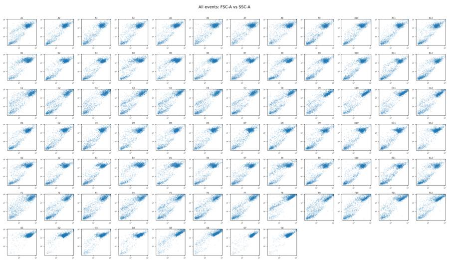
tool call · exec
for (const path of ["/task/outputs/explore_controls.png","/task/outputs/explore_fluorescence.png","/task/outputs/explore_doublets.png","/task/outputs/explore_time.png"]) {
const r=await tools.view_image({path}); image(r.image_url);
}
tool output
Script completed Wall time 0.2 seconds Output:
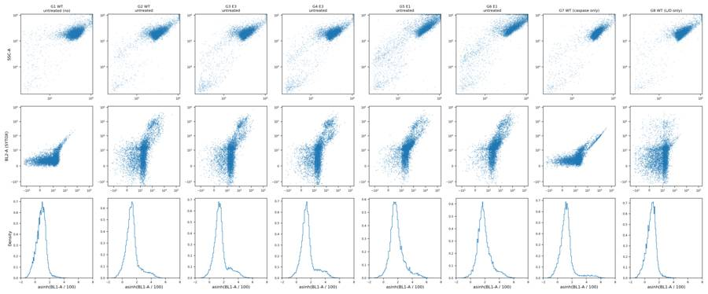
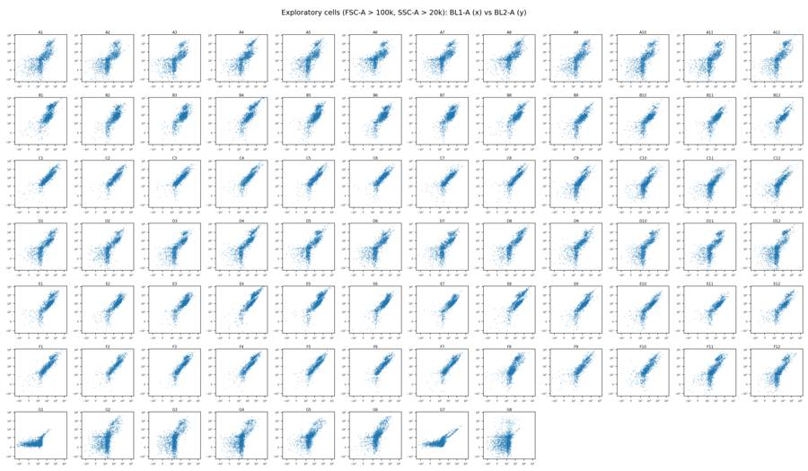
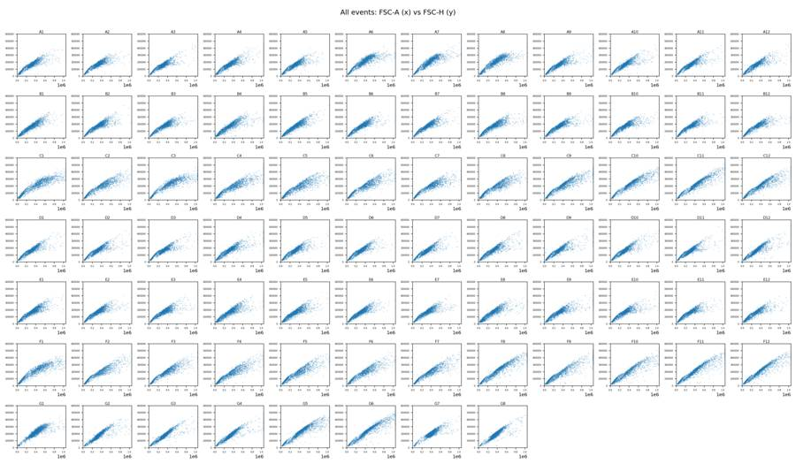
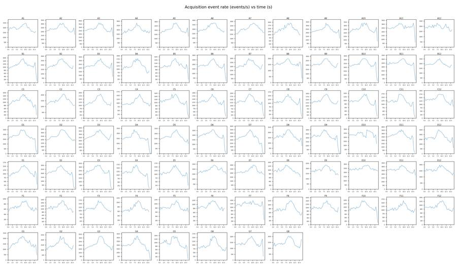
tool call · exec
text(await tools.exec_command({cmd:"cat > /task/outputs/gate_development.py <<'PY'\nfrom pathlib import Path\nimport numpy as np, pandas as pd\nimport matplotlib\nmatplotlib.use('Agg')\nimport matplotlib.pyplot as plt\nfrom scipy.stats import linregress\nimport flowkit as fk\nP=Path('/task/outputs'); layout=pd.read_csv('/task/inputs/plate_layout.csv'); ss={}\nfor r in layout.itertuples(): ss[r.well]=fk.Sample('/task/inputs/raw/'+r.file)\ndef cells(s):\n x=s.get_events(source='raw')\n return (x[:,0]>=.5)&(x[:,0]<15)&(x[:,1]>=80000)&(x[:,1]<1048575)&(x[:,2]>=20000)&(x[:,2]<1048575)\ndef sing(s):\n x=s.get_events(source='raw');return cells(s)&(x[:,9]>=70)&(x[:,9]<180)\nws=['G1','G7','G8','A12','B12','C12','A1','B1','C1','G3','G5','F8']\nfig,axs=plt.subplots(4,6,figsize=(21,13))\nfor j,w in enumerate(ws):\n s=ss[w];x=s.get_events(source='raw');z=x[cells(s)]\n ax=axs[j//6*2,j%6];ax.hexbin(z[:,1],z[:,5],gridsize=80,bins='log',mincnt=1);ax.set_title(w);ax.set_xlim(0,1.05e6);ax.set_ylim(0,6e5);ax.set_xlabel('FSC-A');ax.set_ylabel('FSC-H')\n ax=axs[j//6*2+1,j%6];ax.hist(z[:,9],bins=np.arange(0,380,3),histtype='step');ax.axvline(70,color='r');ax.axvline(180,color='r');ax.set_xlabel('FSC-W')\n print(w,'n cells',len(z),'FSC-W q',np.percentile(z[:,9],[1,5,25,50,75,95,99]), 'kept',sing(s).sum())\nfig.tight_layout();fig.savefig(P/'development_singlets.png',dpi=145);plt.close(fig)\n\nfor w in ['G1','G7','G8']:\n s=ss[w];x=s.get_events(source='raw')[sing(s)]; print('\\nCONTROL',w,'n',len(x))\n for i in [3,4]:print(s.pnn_labels[i],np.percentile(x[:,i],[0,1,25,50,75,90,95,97,98,99,99.5,99.9,100]))\n if w=='G7':\n for lo,hi in [(500,20000),(1000,20000),(2000,20000)]:\n m=(x[:,3]>=lo)&(x[:,3]<hi)\n print('BL1->BL2 regression',lo,hi,m.sum(),linregress(x[m,3],x[m,4]))\n if w=='G8':\n for lo,hi in [(10000,200000),(30000,200000),(50000,200000)]:\n m=(x[:,4]>=lo)&(x[:,4]<hi)\n print('BL2->BL1 regression',lo,hi,m.sum(),linregress(x[m,4],x[m,3]))\n\nfig,axs=plt.subplots(2,4,figsize=(16,9))\nfor j,w in enumerate(['G1','G7','G8','G2']):\n s=ss[w];x=s.get_events(source='raw')[sing(s)]\n axs[0,j].scatter(x[:,3],x[:,4],s=1,alpha=.15);axs[0,j].set_xscale('symlog',linthresh=100);axs[0,j].set_yscale('symlog',linthresh=500);axs[0,j].set_xlim(-200,4e4);axs[0,j].set_ylim(-2000,4e5);axs[0,j].set_title(w)\n if w=='G8':\n axs[1,j].scatter(x[:,4],x[:,3],s=1,alpha=.15);axs[1,j].set_xlim(0,2e5);axs[1,j].set_ylim(-500,2000);axs[1,j].set_xlabel('BL2');axs[1,j].set_ylabel('BL1')\n else:\n axs[1,j].scatter(x[:,3],x[:,4],s=1,alpha=.15);axs[1,j].set_xlim(0,15000);axs[1,j].set_ylim(-500,20000);axs[1,j].set_xlabel('BL1');axs[1,j].set_ylabel('BL2')\nfig.tight_layout();fig.savefig(P/'development_compensation.png',dpi=170)\n\nout=[]\nfor w,s in ss.items():\n x=s.get_events(source='raw')[sing(s)]\n out.append({'well':w,'n':len(x),'FSC-A':np.median(x[:,1]),'SSC-A':np.median(x[:,2]),'FSC-H':np.median(x[:,5]),'FSC-W':np.median(x[:,9]),'BL1-A':np.median(x[:,3]),'BL2-A':np.median(x[:,4])})\npd.DataFrame(out).merge(layout,on='well').to_csv(P/'development_medians.csv',index=False)\nPY\npython /task/outputs/gate_development.py","max_output_tokens":6000,"yield_time_ms":1000}));
tool output
Script completed
Wall time 1.2 seconds
Output:
{"chunk_id":"149d7e","wall_time_seconds":1.00113628,"session_id":63614,"original_token_count":0,"output":""}tool call · exec
text(await tools.write_stdin({session_id:63614,chars:"",yield_time_ms:1000,max_output_tokens:6000}));
for (const path of ["/task/outputs/development_singlets.png","/task/outputs/development_compensation.png"]) {
const r=await tools.view_image({path}); image(r.image_url);
}
tool output
Script completed Wall time 0.1 seconds Output:
{"chunk_id":"eb4e4d","wall_time_seconds":0.00000314,"exit_code":0,"original_token_count":836,"output":"G1 n cells 22524 FSC-W q [ 94. 120. 136. 145. 153. 169. 233.] kept 21846\nG7 n cells 20398 FSC-W q [114. 131. 147. 154. 160. 173. 243.03] kept 19783\nG8 n cells 20615 FSC-W q [100. 116. 127. 140. 152. 166. 223.86] kept 20082\nA12 n cells 18230 FSC-W q [ 85. 106.45 121. 135. 151. 185. 263. ] kept 17116\nB12 n cells 15437 FSC-W q [ 87. 106. 131. 147. 159. 198. 261.] kept 14053\nC12 n cells 12843 FSC-W q [ 85. 107. 130. 147. 160. 189. 249.] kept 11839\nA1 n cells 19506 FSC-W q [ 82. 103. 123. 136. 151. 177. 243.] kept 18551\nB1 n cells 13137 FSC-W q [ 81. 101. 123. 142. 155. 177. 228.64] kept 12503\nC1 n cells 10267 FSC-W q [ 73. 95. 129. 155. 171. 198. 228.] kept 8574\nG3 n cells 28728 FSC-W q [ 87. 106. 120. 129. 143. 165. 242.] kept 27809\nG5 n cells 11585 FSC-W q [ 91. 112. 133. 149. 159. 177. 219.16] kept 11098\nF8 n cells 8764 FSC-W q [ 83. 102. 127. 142. 156. 176. 220.74] kept 8418\n\nCONTROL G1 n 21846\nBL1-A [-195. -93. 36. 91. 150. 206. 247. 277.\n 303.1 357. 428.775 762.085 2542. ]\nBL2-A [-2.290000e+02 5.000000e+00 2.450000e+02 3.630000e+02 5.130000e+02\n 7.110000e+02 8.990000e+02 1.083000e+03 1.260400e+03 1.615550e+03\n 2.027775e+03 3.426535e+03 1.736000e+04]\n\nCONTROL G7 n 19783\nBL1-A [ -892. -68. 74. 137. 212. 326. 687.9 2202.72\n 4240.16 8391.56 11841.32 20804.94 35930. ]\nBL2-A [-8.5000000e+02 2.3000000e+01 2.7800000e+02 4.0600000e+02\n 5.8300000e+02 9.0000000e+02 1.4910000e+03 2.6905400e+03\n 4.2736000e+03 7.7471600e+03 1.0932000e+04 1.9092832e+04\n 3.1041000e+04]\nBL1->BL2 regression 500 20000 1178 LinregressResult(slope=0.8641268301592645, intercept=627.8716378165968, rvalue=0.9802756801047741, pvalue=0.0, stderr=0.00508030102245201, intercept_stderr=28.27562071655019)\nBL1->BL2 regression 1000 20000 806 LinregressResult(slope=0.8789600737097157, intercept=495.43302163098633, rvalue=0.9818148672710647, pvalue=0.0, stderr=0.005993786897614827, intercept_stderr=40.231152670556526)\nBL1->BL2 regression 2000 20000 605 LinregressResult(slope=0.8912439288429876, intercept=376.3614423960007, rvalue=0.9869382559265187, pvalue=0.0, stderr=0.005924350106216961, intercept_stderr=45.61368374593282)\n\nCONTROL G8 n 20082\nBL1-A [-231. -83. 50. 109. 169. 229. 271. 305. 334.38\n 407. 496. 855.38 2947. ]\nBL2-A [-1.60010000e+04 -9.81190000e+02 1.13000000e+02 5.64000000e+02\n 1.12675000e+03 2.16980000e+03 5.85580000e+03 2.19593800e+04\n 4.26582800e+04 7.33809600e+04 1.00321395e+05 2.00385344e+05\n 3.62548000e+05]\nBL2->BL1 regression 10000 200000 781 LinregressResult(slope=6.192908725664936e-05, intercept=139.1616169715615, rvalue=0.013031855093594344, pvalue=0.7161378659029449, stderr=0.00017024831687506944, intercept_stderr=10.748151661676957)\nBL2->BL1 regression 30000 200000 507 LinregressResult(slope=-0.0001110403947812727, intercept=155.09969021388343, rvalue=-0.019159112887109933, pvalue=0.6669236567362933, stderr=0.0002578577498482249, intercept_stderr=19.882411738488415)\nBL2->BL1 regression 50000 200000 328 LinregressResult(slope=9.382916196190226e-05, intercept=132.71619897015398, rvalue=0.025351789958411843, pvalue=0.6473396342866802, stderr=0.0002049183267844561, intercept_stderr=18.675038209742535)\n"}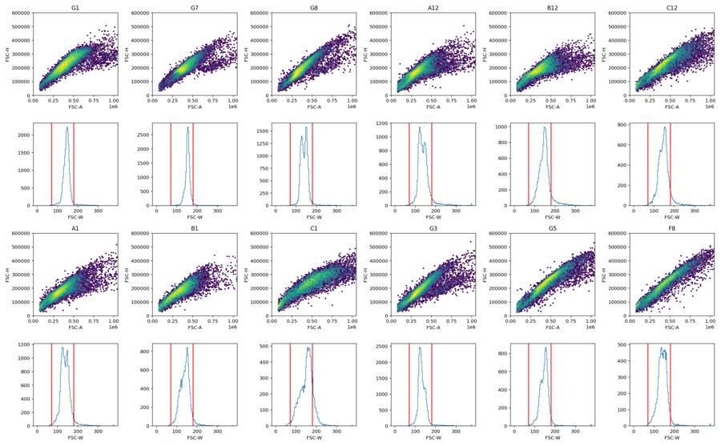
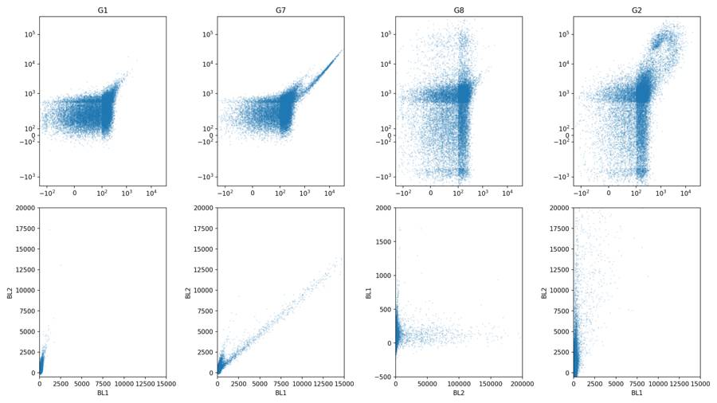
11
agent
The controls show substantial caspase-channel spillover into BL2, so I’ll correct that before classifying cells as live. I also found a possible labeling issue: the untreated controls labeled E3 have scatter profiles resembling E1, and vice versa. I’ll keep the supplied labels and flag the uncertainty; the matched DMSO wells provide separate baselines for the rescue comparison.
tool call · exec
text(await tools.exec_command({cmd:"cat > /task/outputs/preliminary_metrics.py <<'PY'\nimport flowkit as fk, numpy as np, pandas as pd\nimport matplotlib\nmatplotlib.use('Agg')\nimport matplotlib.pyplot as plt\nfrom pathlib import Path\nP=Path('/task/outputs'); lay=pd.read_csv('/task/inputs/plate_layout.csv'); out=[]\nfig,axs=plt.subplots(2,4,figsize=(15,8))\nfor row in lay.itertuples():\n s=fk.Sample('/task/inputs/raw/'+row.file);x=s.get_events(source='raw')\n m=(x[:,0]>=.5)&(x[:,0]<15)&(x[:,1]>=80000)&(x[:,1]<1048575)&(x[:,2]>=20000)&(x[:,2]<1048575)&(x[:,9]>=70)&(x[:,9]<200)\n x=x[m]; c1=x[:,3];c2=x[:,4]-.89*c1;live=c2<3000\n d=dict(well=row.well,n=len(x),live=int(live.sum()),live_pct=100*live.mean(),casp_live_pct=100*(c1[live]>=500).mean(),casp_all_pct=100*(c1>=500).mean(),casp_live_median=np.median(c1[live]),ld_median=np.median(c2))\n out.append(d)\n if row.well in ['G1','G7','G8','G2']:\n j=['G1','G7','G8','G2'].index(row.well)\n print(row.well, 'comp BL2 quantiles',np.percentile(c2,[1,50,95,98,99,99.5,99.9]),'BL1 live quantiles',np.percentile(c1[live],[50,95,99,99.5,99.9]))\n ax=axs[0,j]; ax.scatter(c1,c2,s=1,alpha=.13);ax.set_xscale('symlog',linthresh=100);ax.set_yscale('symlog',linthresh=1000);ax.set_xlim(-200,4e4);ax.set_ylim(-3e3,4e5);ax.axhline(3000,color='r');ax.axvline(500,color='r');ax.set_title(row.well)\n ax=axs[1,j];ax.hist(np.arcsinh(c2/500),bins=150,histtype='step');ax.axvline(np.arcsinh(3000/500),color='r');ax.set_xlabel('asinh(comp BL2 / 500)')\nfig.tight_layout();fig.savefig(P/'development_compensated_controls.png',dpi=160)\nz=lay.merge(pd.DataFrame(out),on='well'); z.to_csv(P/'preliminary_metrics.csv',index=False)\nprint(z.groupby(['cell_line','camptothecin','conditioned_media'])[['live_pct','casp_live_pct','casp_all_pct','casp_live_median']].mean().round(2).to_string())\nprint(z[['well','live','live_pct','casp_live_pct','casp_all_pct']].round(2).to_string(index=False))\nPY\npython /task/outputs/preliminary_metrics.py","yield_time_ms":1000,"max_output_tokens":7000}));
text(await tools.exec_command({cmd:"python - <<'PY'\nimport inspect, flowkit as fk\nprint(inspect.getsource(fk.Matrix.apply))\nprint(inspect.getsource(fk.GatingStrategy.add_gate)[:2000])\nPY","max_output_tokens":3000}));
tool output
Script completed
Wall time 1.9 seconds
Output:
{"chunk_id":"d6bbaa","wall_time_seconds":1.000294249,"session_id":22942,"original_token_count":0,"output":""}
{"chunk_id":"56abc1","wall_time_seconds":0.568338507,"exit_code":0,"original_token_count":709,"output":" def apply(self, sample):\n \"\"\"\n Apply compensation matrix to given Sample instance.\n\n :param sample: Sample instance with matching set of detectors\n :return: NumPy array of compensated events\n \"\"\"\n # Check that sample fluoro channels match the\n # matrix detectors\n sample_fluoro_labels = [sample.pnn_labels[i] for i in sample.fluoro_indices]\n if not set(self.detectors).issubset(sample_fluoro_labels):\n raise FlowKitException(\"Detectors must be a subset of the Sample's fluorochromes\")\n\n indices = [\n sample.get_channel_index(d) for d in self.detectors\n ]\n events = sample.get_events(source='raw')\n\n return flowutils.compensate.compensate(\n events,\n self.matrix,\n indices\n )\n\n def add_gate(self, gate, gate_path, sample_id=None):\n \"\"\"\n Add a gate to the gating strategy, see `gates` module. The gate ID and gate path\n must be unique in the gating strategy. Custom sample gates may be added by specifying\n an optional sample ID. Note, the gate & gate path must already exist prior to adding\n custom sample gates.\n\n :param gate: instance from a subclass of the Gate class\n :param gate_path: complete ordered tuple of gate names for unique set of gate ancestors\n :param sample_id: text string for specifying given gate as a custom Sample gate\n\n :return: None\n \"\"\"\n if not isinstance(gate, Gate):\n raise TypeError(\"gate must be a sub-class of the Gate class\")\n\n # Verify gate_path is a tuple, else user gets a cryptic error for\n # something that is simple to fix\n if not isinstance(gate_path, tuple):\n raise TypeError(\"gate_path must be a tuple not %s\" % str(type(gate_path)))\n\n # make string representation of parent path, used for anytree Resolver later\n parent_abs_gate_path = \"/\" + \"/\".join(gate_path)\n\n # Verify gate name is not \".\" or \"..\" as these are incompatible w/ the\n # current version of anytree (see open issue https://github.com/c0fec0de/anytree/issues/269)\n if gate.gate_name in ['.', '..']:\n raise GateTreeError(\n \"Gate name '%s' is incompatible with FlowKit. Gate was found in path: %s\" %\n (gate.gate_name, parent_abs_gate_path)\n )\n\n # We need the parent gate (via its node) for 2 reasons:\n # 1) To verify the parent exists when creating a new node\n # 2) Verify the parent is NOT a QuadrantGate, as only\n # Quadrants of a QuadrantGate can be a parent.\n try:\n parent_node = self.resolver.get(self._gate_tree, parent_abs_gate_path)\n except anytree.ResolverError:\n # this should nev\n"}tool call · exec
text(await tools.write_stdin({session_id:22942,chars:"",yield_time_ms:1000,max_output_tokens:8000}));
const r=await tools.view_image({path:"/task/outputs/development_compensated_controls.png"}); image(r.image_url);
tool output
Script completed Wall time 0.0 seconds Output:
{"chunk_id":"1a7eac","wall_time_seconds":0.00000359,"exit_code":0,"original_token_count":2300,"output":"G1 comp BL2 quantiles [ -86.893 292.18 786.215 1115.852 1458.485 1916.2535 3186.7615] BL1 live quantiles [ 92. 250. 364. 423.805 637.961]\nG2 comp BL2 quantiles [ -1272.2516 629.87 40063.282 80282.044 105099.7184 137588.9034\n 223906.6996] BL1 live quantiles [ 140. 346. 643. 908.265 2214.792]\nG7 comp BL2 quantiles [-122.8106 288.715 789.7785 1115.9464 1396.774 1783.91305\n 2925.13668] BL1 live quantiles [ 138. 716. 8497.27 11881.88 20509.241]\nG8 comp BL2 quantiles [ -1073.2864 479.58 6164.982 43503.1168\n 74224.7736 102513.1949 212908.43604001] BL1 live quantiles [108. 268. 399. 475. 705.868]\n live_pct casp_live_pct casp_all_pct casp_live_median\ncell_line camptothecin conditioned_media \nE1 10uM WT 24hr conditioned media 29.39 47.84 82.67 461.75\n WT 48hr conditioned media 24.79 44.55 84.09 425.00\n no conditioned media 42.51 30.48 67.73 290.50\n 2uM WT 24hr conditioned media 26.29 40.41 83.40 411.50\n WT 48hr conditioned media 25.01 36.47 82.29 337.50\n no conditioned media 39.45 37.61 72.67 341.75\n 5uM WT 24hr conditioned media 30.34 40.19 80.91 362.50\n WT 48hr conditioned media 27.45 38.14 81.33 354.00\n no conditioned media 44.41 28.06 65.77 277.50\n DMSO WT 24hr conditioned media 25.15 49.18 85.36 463.75\n WT 48hr conditioned media 23.49 46.14 83.80 424.00\n no conditioned media 39.95 27.11 66.70 263.50\n no treatment no conditioned media 82.39 7.76 17.17 219.50\nE3 10uM WT 24hr conditioned media 31.12 14.73 65.66 277.25\n WT 48hr conditioned media 33.94 16.26 64.54 296.00\n no conditioned media 52.67 10.99 43.70 230.50\n 2uM WT 24hr conditioned media 35.49 15.49 63.18 294.50\n WT 48hr conditioned media 36.01 16.85 63.31 305.50\n no conditioned media 69.53 7.16 28.63 225.50\n 5uM WT 24hr conditioned media 31.91 22.77 70.69 319.00\n WT 48hr conditioned media 31.23 17.18 67.57 304.00\n no conditioned media 62.87 9.49 34.16 230.50\n DMSO WT 24hr conditioned media 27.90 19.30 71.22 302.25\n WT 48hr conditioned media 47.27 13.04 48.33 278.50\n no conditioned media 67.36 7.84 32.10 211.00\n no treatment no conditioned media 82.42 2.09 14.22 162.00\nWT 10uM WT 24hr conditioned media 64.28 12.48 39.21 163.50\n WT 48hr conditioned media 65.07 11.06 38.06 166.50\n no conditioned media 62.85 10.36 38.07 173.00\n 2uM WT 24hr conditioned media 68.53 13.66 38.04 170.50\n WT 48hr conditioned media 65.87 9.47 35.22 166.00\n no conditioned media 67.35 9.29 35.21 165.00\n 5uM WT 24hr conditioned media 69.36 11.83 35.82 165.00\n WT 48hr conditioned media 66.39 9.63 34.99 165.00\n no conditioned media 67.25 8.54 34.20 166.00\n DMSO WT 24hr conditioned media 58.47 14.56 47.16 173.25\n WT 48hr conditioned media 57.26 10.03 43.79 171.50\n no conditioned media 69.97 7.44 30.10 157.50\n no treatment no conditioned media 92.01 1.06 5.40 116.00\n not stated no conditioned media 96.16 3.38 3.53 123.00\nwell live live_pct casp_live_pct casp_all_pct\n A1 13294 70.12 14.40 33.29\n A2 18696 74.60 16.66 34.22\n A3 20981 74.78 17.92 35.05\n A4 13633 65.67 20.92 44.32\n A5 15213 69.53 15.64 36.94\n A6 15975 69.01 13.20 33.56\n A7 16651 68.84 12.11 33.58\n A8 10064 63.70 12.52 38.10\n A9 14954 68.30 13.01 34.34\n A10 17804 69.27 11.18 33.38\n A11 17606 69.27 11.79 34.69\n A12 11075 63.05 12.03 38.16\n B1 4224 32.94 60.89
… [3,435 more characters not shown]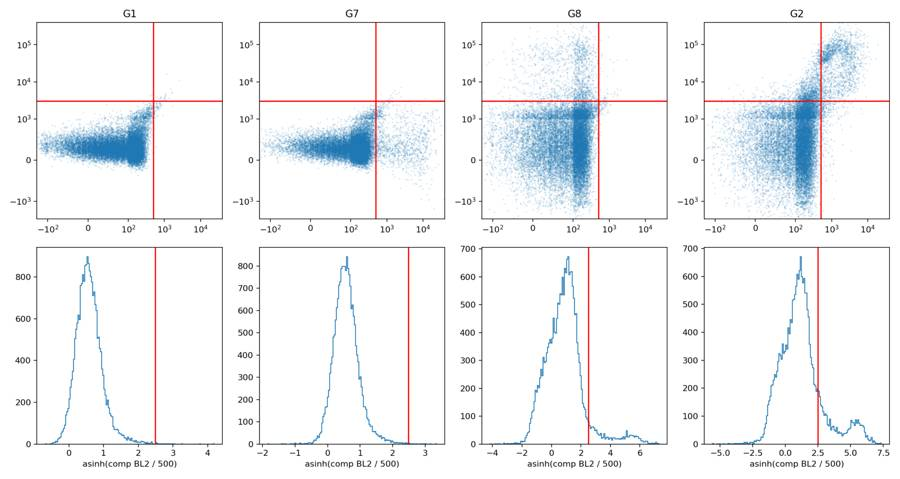
tool call · exec
text(await tools.exec_command({cmd:"cat > /task/outputs/analysis_core.py <<'PY'\n\"\"\"Shared, fixed plate gating definitions; all input files remain read-only.\"\"\"\nfrom pathlib import Path\nimport flowkit as fk\nimport numpy as np\n\nINPUT = Path('/task/inputs')\nOUTPUT = Path('/task/outputs')\nSPILLOVER_ID = 'cell_event_spill'\n# Rows are source fluorochromes; columns are measured detectors.\n# BL1->BL2 slope in the bright G7 single-stain control rounds to 0.89.\n# G8 shows negligible BL2->BL1 spillover.\nSPILLOVER = np.array([[1.0, 0.89], [0.0, 1.0]])\nPOPULATIONS = [\n ('all_events', 'other', 'none'),\n ('stable_time', 'other', 'all_events'),\n ('cells', 'cells', 'stable_time'),\n ('singlets', 'singlets', 'cells'),\n ('live', 'live', 'singlets'),\n ('caspase_positive', 'marker_positive', 'live'),\n ('nonlive', 'other', 'singlets'),\n ('caspase_positive_nonlive', 'other', 'nonlive'),\n ('caspase_positive_all', 'other', 'singlets'),\n]\n\ndef build_strategy():\n gs = fk.GatingStrategy()\n gs.add_comp_matrix(SPILLOVER_ID, fk.Matrix(SPILLOVER, ['BL1-A', 'BL2-A']))\n def dim(channel, lo=None, hi=None, comp='uncompensated'):\n return fk.Dimension(channel, compensation_ref=comp, range_min=lo, range_max=hi)\n paths={}\n dimensions = {\n 'all_events':[dim('Time')],\n 'stable_time':[dim('Time', .5, 15.0)],\n 'cells':[dim('FSC-A', 80000, 1048575),dim('SSC-A', 20000, 1048575)],\n 'singlets':[dim('FSC-W', 70, 200)],\n 'live':[dim('BL2-A', hi=3000, comp=SPILLOVER_ID)],\n 'caspase_positive':[dim('BL1-A', lo=500, comp=SPILLOVER_ID)],\n 'nonlive':[dim('BL2-A', lo=3000, comp=SPILLOVER_ID)],\n 'caspase_positive_nonlive':[dim('BL1-A', lo=500, comp=SPILLOVER_ID)],\n 'caspase_positive_all':[dim('BL1-A', lo=500, comp=SPILLOVER_ID)]\n }\n for name,role,parent in POPULATIONS:\n path=('root',) if parent=='none' else paths[parent]+(parent,)\n gs.add_gate(fk.gates.RectangleGate(name, dimensions[name]), path)\n paths[name]=path\n return gs\n\nif __name__=='__main__':\n gs=build_strategy()\n with (OUTPUT/'gates.xml').open('wb') as f: fk.export_gatingml(gs,f)\n loaded=fk.parse_gating_xml(str(OUTPUT/'gates.xml'))\n s=fk.Sample(str(INPUT/'raw/Caspase-assay-2-mlk_caspase_Group_G7.fcs'))\n raw=s.get_events(source='raw'); comp=loaded.get_comp_matrix(SPILLOVER_ID).apply(s)\n assert np.allclose(comp[:,4],raw[:,4]-.89*raw[:,3])\n r=loaded.gate_sample(s)\n print(r.report.to_string(index=False))\n print('GatingML exported, reloaded, and compensation orientation verified.')\nPY\npython /task/outputs/analysis_core.py","yield_time_ms":1000,"max_output_tokens":4000}));
tool output
Script completed
Wall time 0.7 seconds
Output:
{"chunk_id":"07cb93","wall_time_seconds":0.537051833,"exit_code":1,"original_token_count":192,"output":"Traceback (most recent call last):\n File \"/task/outputs/analysis_core.py\", line 51, in <module>\n loaded=fk.parse_gating_xml(str(OUTPUT/'gates.xml'))\n ^^^^^^^^^^^^^^^^^^^^^^^^^^^^^^^^^^^^^^^^^^^^\n File \"/usr/local/lib/python3.12/site-packages/flowkit/_utils/xml_utils.py\", line 39, in parse_gating_xml\n doc_type, root_gml, gating_ns, data_type_ns, xform_ns = _get_xml_type(xml_file_or_path)\n ^^^^^^^^^^^^^^^^^^^^^^^^^^^^^^^\n File \"/usr/local/lib/python3.12/site-packages/flowkit/_utils/xml_common.py\", line 25, in _get_xml_type\n raise ValueError(\"File is neither GatingML 2.0 compliant nor a FlowJo workspace.\")\nValueError: File is neither GatingML 2.0 compliant nor a FlowJo workspace.\n"}tool call · exec
text(await tools.exec_command({cmd:"cat /task/outputs/gates.xml && python - <<'PY'\nimport inspect\nfrom flowkit._utils import xml_common\nprint(inspect.getsource(xml_common._get_xml_type))\nprint(xml_common.__dict__.keys())\nPY","max_output_tokens":6500}));
tool output
Script completed
Wall time 0.7 seconds
Output:
{"chunk_id":"675336","wall_time_seconds":0.556880808,"exit_code":0,"original_token_count":1281,"output":"<?xml version='1.0' encoding='UTF-8'?>\n<gating:Gating-ML xmlns:gating=\"http://www.isac-net.org/std/Gating-ML/v2.0/gating\" xmlns:data-type=\"http://www.isac-net.org/std/Gating-ML/v2.0/datatypes\" xmlns:transforms=\"http://www.isac-net.org/std/Gating-ML/v2.0/transformations\">\n <transforms:spectrumMatrix transforms:id=\"cell_event_spill\">\n <transforms:fluorochromes>\n <data-type:fcs-dimension data-type:name=\"\"/>\n <data-type:fcs-dimension data-type:name=\"\"/>\n </transforms:fluorochromes>\n <transforms:detectors>\n <data-type:fcs-dimension data-type:name=\"BL1-A\"/>\n <data-type:fcs-dimension data-type:name=\"BL2-A\"/>\n </transforms:detectors>\n <transforms:spectrum>\n <transforms:coefficient transforms:value=\"1.0\"/>\n <transforms:coefficient transforms:value=\"0.89\"/>\n </transforms:spectrum>\n <transforms:spectrum>\n <transforms:coefficient transforms:value=\"0.0\"/>\n <transforms:coefficient transforms:value=\"1.0\"/>\n </transforms:spectrum>\n </transforms:spectrumMatrix>\n <gating:RectangleGate gating:id=\"all_events\">\n <gating:dimension gating:compensation-ref=\"uncompensated\">\n <data-type:fcs-dimension data-type:name=\"Time\"/>\n </gating:dimension>\n </gating:RectangleGate>\n <gating:RectangleGate gating:id=\"stable_time\" gating:parent_id=\"all_events\">\n <gating:dimension gating:compensation-ref=\"uncompensated\" gating:min=\"0.5\" gating:max=\"15.0\">\n <data-type:fcs-dimension data-type:name=\"Time\"/>\n </gating:dimension>\n </gating:RectangleGate>\n <gating:RectangleGate gating:id=\"cells\" gating:parent_id=\"stable_time\">\n <gating:dimension gating:compensation-ref=\"uncompensated\" gating:min=\"80000.0\" gating:max=\"1048575.0\">\n <data-type:fcs-dimension data-type:name=\"FSC-A\"/>\n </gating:dimension>\n <gating:dimension gating:compensation-ref=\"uncompensated\" gating:min=\"20000.0\" gating:max=\"1048575.0\">\n <data-type:fcs-dimension data-type:name=\"SSC-A\"/>\n </gating:dimension>\n </gating:RectangleGate>\n <gating:RectangleGate gating:id=\"singlets\" gating:parent_id=\"cells\">\n <gating:dimension gating:compensation-ref=\"uncompensated\" gating:min=\"70.0\" gating:max=\"200.0\">\n <data-type:fcs-dimension data-type:name=\"FSC-W\"/>\n </gating:dimension>\n </gating:RectangleGate>\n <gating:RectangleGate gating:id=\"live\" gating:parent_id=\"singlets\">\n <gating:dimension gating:compensation-ref=\"cell_event_spill\" gating:max=\"3000.0\">\n <data-type:fcs-dimension data-type:name=\"BL2-A\"/>\n </gating:dimension>\n </gating:RectangleGate>\n <gating:RectangleGate gating:id=\"caspase_positive\" gating:parent_id=\"live\">\n <gating:dimension gating:compensation-ref=\"cell_event_spill\" gating:min=\"500.0\">\n <data-type:fcs-dimension data-type:name=\"BL1-A\"/>\n </gating:dimension>\n </gating:RectangleGate>\n <gating:RectangleGate gating:id=\"nonlive\" gating:parent_id=\"singlets\">\n <gating:dimension gating:compensation-ref=\"cell_event_spill\" gating:min=\"3000.0\">\n <data-type:fcs-dimension data-type:name=\"BL2-A\"/>\n </gating:dimension>\n </gating:RectangleGate>\n <gating:RectangleGate gating:id=\"caspase_positive_nonlive\" gating:parent_id=\"nonlive\">\n <gating:dimension gating:compensation-ref=\"cell_event_spill\" gating:min=\"500.0\">\n <data-type:fcs-dimension data-type:name=\"BL1-A\"/>\n </gating:dimension>\n </gating:RectangleGate>\n <gating:RectangleGate gating:id=\"caspase_positive_all\" gating:parent_id=\"singlets\">\n <gating:dimension gating:compensation-ref=\"cell_event_spill\" gating:min=\"500.0\">\n <data-type:fcs-dimension data-type:name=\"BL1-A\"/>\n </gating:dimension>\n </gating:RectangleGate>\n</gating:Gating-ML>\ndef _get_xml_type(xml_file_or_path):\n xml_document = etree.parse(xml_file_or_path)\n\n val = gml_schema.validate(xml_document)\n root = xml_document.getroot()\n\n if val:\n doc_type = 'gatingml'\n else:\n # Try parsing as a FlowJo workspace\n if 'flowJoVersion' in root.attrib:\n if int(root.attrib['flowJoVersion'].split('.')[0]) >= 10:\n doc_type = 'flowjo'\n else:\n raise ValueError(\"FlowKit only supports FlowJo workspaces for version 10 or higher.\")\n else:\n raise ValueError(\"File is neither GatingML 2.0 compliant nor a FlowJo workspace.\")\n\n gating_ns = None\n data_type_ns = None\n transform_ns = None\n\n # find GatingML target namespace in the map\n for ns, url in root.nsmap.items():\n if url == 'http://www.isac-net.org/std/Gating-ML/v2.0/gating':\n gating_ns = ns\n elif url == 'http://www.isac-net.org/std/Gating-ML/v2.0/datatypes':\n data_type_ns = ns\n elif url == 'http://www.isac-net.org/std/Gating-ML/v2.0/transformations':\n transform_ns = ns\n\n if gating_ns is None:\n raise ValueError(\"GatingML namespace reference is missing from GatingML file\")\n\n return doc_type, root, gating_ns, data_type_ns, transform_ns\n\ndict_keys(['__name__', '__doc__', '__package__', '__loader__', '__spec__', '__file__', '__cached__', '__builtins__', 'etree', 'gml_schema', '_get_xml_type', 'find_attribute_value'])\n"}tool call · exec
text(await tools.exec_command({cmd:"python - <<'PY'\nfrom flowkit._utils.xml_common import gml_schema\nfrom lxml import etree\ngml_schema.validate(etree.parse('/task/outputs/gates.xml'))\nprint(gml_schema.error_log)\nPY","max_output_tokens":2500}));
text(await tools.apply_patch("*** Begin Patch\n*** Update File: /task/outputs/analysis_core.py\n@@\n- gs.add_comp_matrix(SPILLOVER_ID, fk.Matrix(SPILLOVER, ['BL1-A', 'BL2-A']))\n+ gs.add_comp_matrix(SPILLOVER_ID, fk.Matrix(\n+ SPILLOVER, ['BL1-A', 'BL2-A'], ['CellEvent_Caspase_3_7', 'SYTOX_AADvanced']))\n*** End Patch"));
text(await tools.exec_command({cmd:"python /task/outputs/analysis_core.py","yield_time_ms":1000,"max_output_tokens":4000}));
tool output
Script completed
Wall time 1.5 seconds
Output:
{"chunk_id":"35f6b3","wall_time_seconds":0.573825151,"exit_code":0,"original_token_count":164,"output":"/task/outputs/gates.xml:5:0:ERROR:SCHEMASV:SCHEMAV_CVC_MINLENGTH_VALID: Element '{http://www.isac-net.org/std/Gating-ML/v2.0/datatypes}fcs-dimension', attribute '{http://www.isac-net.org/std/Gating-ML/v2.0/datatypes}name': [facet 'minLength'] The value '' has a length of '0'; this underruns the allowed minimum length of '1'.\n/task/outputs/gates.xml:6:0:ERROR:SCHEMASV:SCHEMAV_CVC_MINLENGTH_VALID: Element '{http://www.isac-net.org/std/Gating-ML/v2.0/datatypes}fcs-dimension', attribute '{http://www.isac-net.org/std/Gating-ML/v2.0/datatypes}name': [facet 'minLength'] The value '' has a length of '0'; this underruns the allowed minimum length of '1'.\n"}
{}
{"chunk_id":"37e2ac","wall_time_seconds":0.566275906,"exit_code":0,"original_token_count":472,"output":"sample gate_path gate_name gate_type quadrant_parent parent count absolute_percent relative_percent level\nG7.fcs (root,) all_events RectangleGate None root 24019 100.000000 100.000000 0\nG7.fcs (root, all_events) stable_time RectangleGate None all_events 21792 90.728174 90.728174 1\nG7.fcs (root, all_events, stable_time) cells RectangleGate None stable_time 20398 84.924435 93.603157 2\nG7.fcs (root, all_events, stable_time, cells) singlets RectangleGate None cells 20034 83.408968 98.215511 3\nG7.fcs (root, all_events, stable_time, cells, singlets) caspase_positive_all RectangleGate None singlets 1289 5.366585 6.434062 4\nG7.fcs (root, all_events, stable_time, cells, singlets) live RectangleGate None singlets 20014 83.325700 99.900170 4\nG7.fcs (root, all_events, stable_time, cells, singlets) nonlive RectangleGate None singlets 20 0.083267 0.099830 4\nG7.fcs (root, all_events, stable_time, cells, singlets, live) caspase_positive RectangleGate None live 1270 5.287481 6.345558 5\nG7.fcs (root, all_events, stable_time, cells, singlets, nonlive) caspase_positive_nonlive RectangleGate None nonlive 19 0.079104 95.000000 5\nGatingML exported, reloaded, and compensation orientation verified.\n"}tool call · exec
text(await tools.exec_command({cmd:"cat > /task/outputs/analyse_plate.py <<'PY'\n\"\"\"Generate counts and well/condition summaries from the saved GatingML.\n\nRun: python /task/outputs/analyse_plate.py\nAll event counts in counts.csv come from FlowKit gating statistics.\n\"\"\"\nfrom pathlib import Path\nimport json\nimport numpy as np\nimport pandas as pd\nimport flowkit as fk\nfrom analysis_core import INPUT, OUTPUT, POPULATIONS\n\nMETRIC = '100 x caspase_positive count / live count; percent of SYTOX-low singlets that are CellEvent Caspase-3/7-positive'\nMEDIA = {'no conditioned media':'no_CM', 'WT 24hr conditioned media':'WT24h_CM', 'WT 48hr conditioned media':'WT48h_CM'}\ndef condition(row):\n if row.well=='G1':return 'WT_unstained_control'\n if row.well=='G7':return 'WT_caspase_only_control_treatment_not_stated'\n if row.well=='G8':return 'WT_SYTOX_only_control_treatment_not_stated'\n if row.well in ['G3','G4','G5','G6']:\n return f'{row.cell_line}_label_unverified_no_treatment_no_CM'\n return f'{row.cell_line}_{row.camptothecin.replace(\" \",\"_\")}_{MEDIA[row.conditioned_media]}'\n\nlayout=pd.read_csv(INPUT/'plate_layout.csv')\ngs=fk.parse_gating_xml(str(OUTPUT/'gates.xml'))\ncounts=[];metrics=[];all_qc=[]\nfor row in layout.itertuples():\n sample=fk.Sample(str(INPUT/'raw'/row.file))\n results=gs.gate_sample(sample)\n nc={name:int(results.get_gate_count(name)) for name,_,_ in POPULATIONS}\n assert nc['all_events']==sample.event_count\n assert nc['singlets']==nc['live']+nc['nonlive']\n assert nc['caspase_positive_all']==nc['caspase_positive']+nc['caspase_positive_nonlive']\n for name,role,parent in POPULATIONS:\n p=np.nan if parent=='none' else 100*nc[name]/nc[parent] if nc[parent] else np.nan\n counts.append({'file':row.file,'well':row.well,'population':name,'role':role,'parent':parent,'count':nc[name],'pct_of_parent':p})\n x=sample.get_events(source='raw');t=x[:,0]\n mtime=results.get_gate_membership('stable_time')\n msing=results.get_gate_membership('singlets')\n mlive=results.get_gate_membership('live')\n mpos=results.get_gate_membership('caspase_positive')\n cells=results.get_gate_membership('cells')\n c1=x[:,3];c2=x[:,4]-.89*c1\n d=row._asdict();d.pop('Index');d['condition']=condition(row)\n d.update(nc)\n d.update(caspase_pct_live=100*nc['caspase_positive']/nc['live'],live_pct_singlets=100*nc['live']/nc['singlets'],caspase_pct_singlets=100*nc['caspase_positive_all']/nc['singlets'],caspase_nonlive_pct_singlets=100*nc['caspase_positive_nonlive']/nc['singlets'],median_BL1_live=np.median(c1[mlive]),median_BL1_singlets=np.median(c1[msing]),median_FSC_A_singlets=np.median(x[msing,1]),median_SSC_A_singlets=np.median(x[msing,2]))\n metrics.append(d)\n q={'file':row.file,'well':row.well,'n_all_events':len(x),'n_live':nc['live'],'duration_s':float(t.max()-t.min()),'fraction_time_retained_pct':100*mtime.mean(),'fraction_cells_of_time_pct':100*cells.sum()/mtime.sum(),'fraction_singlets_of_cells_pct':100*msing.sum()/cells.sum(),'live_pct_singlets':d['live_pct_singlets'],'FSC_A_clipped_pct_all':100*(x[:,1]>=1048575).mean(),'SSC_A_clipped_pct_all':100*(x[:,2]>=1048575).mean(),'scatter_clipped_pct_all':100*((x[:,1]>=1048575)|(x[:,2]>=1048575)).mean(),'BL1_A_clipped_pct_all':100*(x[:,3]>=1048575).mean(),'BL2_A_clipped_pct_all':100*(x[:,4]>=1048575).mean(),'max_gap_s':np.diff(t).max(),'max_gap_inside_time_gate_s':np.diff(t[mtime]).max(),'n_backward_time':int((np.diff(t)<0).sum()),'lost_events':int(sample.get_metadata()['lost']),'acquisition_start':sample.get_metadata()['btim'],'acquisition_end':sample.get_metadata()['etim'],'FSC_A_median_singlets':d['median_FSC_A_singlets'],'SSC_A_median_singlets':d['median_SSC_A_singlets']}\n edges=np.linspace(t.min(),t.max()+1e-6,33);h=np.histogram(t,edges)[0]\n q['last_bin_rate_relative_to_middle']=h[-1]/np.median(h[2:-4])\n # Independent within-window check for drifting sample composition.\n for label,lo,hi in [('early',.5,7.75),('late',7.75,15)]:\n live_half=mlive&(t>=lo)&(t<hi);q[f'{label}_live_n']=int(live_half.sum());q[f'{label}_caspase_pct_live']=100*(mpos&live_half).sum()/live_half.sum()\n q['early_late_caspase_delta_pp']=q['late_caspase_pct_live']-q['early_caspase_pct_live']\n all_qc.append(q)\n\npd.DataFrame(counts).to_csv(OUTPUT/'counts.csv',index=False,float_format='%.10g')\nmetrics=pd.DataFrame(metrics);qc=pd.DataFrame(all_qc)\nmetrics.to_csv(OUTPUT/'well_metrics.csv',index=False,float_format='%.10g')\nqc.to_csv(OUTPUT/'qc_metrics.csv',index=False,float_format='%.10g')\nflags=[]\nfor row in qc.itertuples():\n issues=[];evidence=[]\n if row.well in ['G3','G4','G5','G6']:\n issues.append('mislabel')\n stated='E3' if row.well in ['G3','G4'] else 'E1'\n resembles='E1' if stated=='E3' else 'E3'\n evidence.append(f'Suspected identity mismatch, not confirmed: labeled {stated}; singlet FSC-A median {row.FSC_A_median_singlets:.0f}, SSC-A median {row.SSC_A_median_singlets:.0f}, morphology resembles the {resembles} experimental rows. Retain supplied label; diagnostic only, not a rescue baseline.')\n if row.scatter_clipped_pct_all>=2:\n issues.append('saturation')\n evidence.append(f'{row.scatter_clipped_pct_all:.2f}% of all events clipped in FSC-A or SSC-A at 1048575 (FSC-A {row.FSC_A_clipped_pct_all:.2f}%, SSC-A {row.SSC_A_clipped_pct_all:.2f}%); clipped scatter events excluded by common cells gate; BL1-A clipping {row.BL1_A_clipped_pct_all:.2f}%.')\n if row.live_pct_singlets<50 and row.well[0]!='G':\n issues.append('other')\n evidence.append(f'Low recovered membrane-intact fraction: {row.live_pct_singlets:.2f}% live among singlets, n_live={row.n_live}; retained as observed treatment/condition biology, with nonlive-inclusive sensitivity analysis.')\n if row.last_bin_rate_relative_to_middle<.2:\n issues.append('other')\n evidence.append(f'Terminal event-r
… [2,320 more characters not shown]tool output
Script completed
Wall time 1.2 seconds
Output:
{"chunk_id":"176e10","wall_time_seconds":1.00108333,"session_id":77187,"original_token_count":0,"output":""}tool call · exec
text(await tools.write_stdin({session_id:77187,chars:"",yield_time_ms:1000,max_output_tokens:9000}));
text(await tools.exec_command({cmd:"python - <<'PY'\nimport pandas as pd\nm=pd.read_csv('/task/outputs/well_metrics.csv')\nq=pd.read_csv('/task/outputs/qc_metrics.csv')\nprint('Population minima',m[['all_events','cells','singlets','live']].min().to_dict())\nprint('QC max in-time gap', q.max_gap_inside_time_gate_s.max())\nprint('Acquisition start/end',q.acquisition_start.iloc[0],q.acquisition_end.iloc[-1])\nprint('Experimental row scatter medians')\nm['plate_row']=m.well.str[0]\nprint(m.groupby('plate_row')[['median_FSC_A_singlets','median_SSC_A_singlets']].median().round(0))\nPY","max_output_tokens":3000}));
tool output
Script completed
Wall time 0.2 seconds
Output:
{"chunk_id":"43e94a","wall_time_seconds":0.00000349,"exit_code":0,"original_token_count":2879,"output":"Saved counts from reloaded gates: 720 rows; conditions: 42\nissue_type decision \nmislabel keep_with_note 4\nnone keep 21\nother keep_with_note 29\nsaturation keep_with_note 26\ndtype: int64\nwell FSC_A_median_singlets SSC_A_median_singlets max_gap_inside_time_gate_s early_late_caspase_delta_pp\n A1 325577.0 194782.5 0.01 -0.63\n A2 329504.0 199843.0 0.00 -0.50\n A3 304536.5 198247.5 0.00 -0.39\n A4 317820.0 191020.0 0.01 -1.28\n A5 308079.0 198635.0 0.04 -0.18\n A6 392429.0 206956.0 0.01 -0.69\n A7 381266.0 204074.5 0.00 -0.69\n A8 396569.0 203897.0 0.01 -2.26\n A9 314043.0 183902.0 0.01 -1.17\n A10 317738.0 195882.0 0.01 -0.54\n A11 317184.5 192822.0 0.01 -0.28\n A12 312588.5 188226.5 0.02 -1.15\n B1 333509.5 214128.5 0.01 -1.09\n B2 350963.0 187198.0 0.01 -0.83\n B3 352179.0 178613.0 0.01 -3.04\n B4 339005.0 206031.5 0.02 -1.96\n B5 326589.0 207809.0 0.01 -4.51\n B6 342455.0 190554.0 0.01 0.08\n B7 339459.5 189062.0 0.00 -2.75\n B8 353049.5 190552.0 0.01 -1.95\n B9 333351.0 187506.0 0.01 0.60\n B10 335071.0 180898.0 0.01 0.58\n B11 332048.0 165402.5 0.01 0.47\n B12 349990.0 175730.0 0.01 -0.87\n C1 477671.0 330698.0 0.01 1.01\n C2 429289.0 337546.5 0.01 -2.25\n C3 473152.5 353302.5 0.01 -1.32\n C4 415210.0 333826.0 0.01 -3.44\n C5 418109.0 354351.0 0.01 2.25\n C6 440642.0 355969.0 0.01 -0.37\n C7 428196.5 359948.5 0.01 -0.64\n C8 432241.0 347098.5 0.01 -0.41\n C9 430662.5 297278.0 0.01 1.26\n C10 460942.0 325838.0 0.01 -0.05\n C11 460570.0 341437.0 0.01 0.01\n C12 423387.5 290810.5 0.01 -0.57\n D1 321253.0 193217.0 0.01 -1.63\n D2 319016.0 209550.0 0.00 -0.23\n D3 320977.0 206801.0 0.00 -0.96\n D4 325221.0 198051.0 0.01 -0.82\n D5 314949.0 209389.0 0.01 -1.06\n D6 312297.0 216232.5 0.01 0.27\n D7 304999.5 217215.5 0.01 -0.95\n D8 325293.0 210033.0 0.01 0.62\n D9 314217.0 192369.0 0.01 -0.62\n D10 303092.5 204291.0 0.02 -0.04\n D11 299104.0 201752.0 0.00 0.06\n D12 305167.0 207848.0 0.01 -0.33\n E1 353736.0 200567.5 0.01 -3.86\n E2 343750.5 185353.5 0.01 -3.20\n E3 340298.0 181737.0
… [6,609 more characters not shown]18
agent
The first gated results do not support rescue. In DMSO wells, E1 rises from about 27% caspase-positive live cells without conditioned media to 49% with 24-hour media and 46% with 48-hour media. E3 is already near WT without conditioned media and rises with media. The media-treated KO wells also have lower live fractions. I’ve saved the gates and counts and am checking how sensitive these findings are to gate placement and cell loss.
tool call · exec
text(await tools.exec_command({cmd:"cat > /task/outputs/sensitivity.py <<'PY'\n\"\"\"Diagnostic gate sensitivity, separate from the fixed FlowKit counts.\nEach alternative is identical across all wells. No alternative changes counts.csv.\n\"\"\"\nimport numpy as np, pandas as pd, flowkit as fk\nfrom analysis_core import INPUT, OUTPUT\nlayout=pd.read_csv(INPUT/'plate_layout.csv')\nbase=dict(tmin=.5,tmax=15,fsc_min=80000,ssc_min=20000,scatter_max=1048575,width_min=70,width_max=200,spill=.89,live_max=3000,casp_min=500)\nvariants={\n 'primary':{},\n 'all_acquisition_times':{'tmin':-np.inf,'tmax':np.inf},\n 'early_acquisition':{'tmax':7.75},\n 'late_acquisition':{'tmin':7.75},\n 'looser_cell_gate':{'fsc_min':60000,'ssc_min':10000},\n 'tighter_cell_gate':{'fsc_min':100000,'ssc_min':30000},\n 'retain_scatter_clipping':{'scatter_max':1048576},\n 'narrower_singlet_width':{'width_max':180},\n 'wider_singlet_width':{'width_max':220},\n 'lower_live_threshold':{'live_max':2000},\n 'higher_live_threshold':{'live_max':5000},\n 'lower_caspase_threshold':{'casp_min':400},\n 'higher_caspase_threshold':{'casp_min':750},\n 'strict_caspase_threshold':{'casp_min':1000},\n 'spill_0_80':{'spill':.80},\n 'spill_1_00':{'spill':1.0},\n 'uncompensated_diagnostic':{'spill':0.0},\n}\nrec=[]\nfor row in layout.itertuples():\n sample=fk.Sample(str(INPUT/'raw'/row.file));x=sample.get_events(source='raw')\n for label,changes in variants.items():\n p={**base,**changes}\n sing=(x[:,0]>=p['tmin'])&(x[:,0]<p['tmax'])&(x[:,1]>=p['fsc_min'])&(x[:,1]<p['scatter_max'])&(x[:,2]>=p['ssc_min'])&(x[:,2]<p['scatter_max'])&(x[:,9]>=p['width_min'])&(x[:,9]<p['width_max'])\n live=sing&(x[:,4]-p['spill']*x[:,3]<p['live_max']);pos=live&(x[:,3]>=p['casp_min'])\n rec.append(dict(variant=label,well=row.well,cell_line=row.cell_line,camptothecin=row.camptothecin,conditioned_media=row.conditioned_media,singlets_n=int(sing.sum()),live_n=int(live.sum()),caspase_positive_n=int(pos.sum()),caspase_pct_live=100*pos.sum()/live.sum(),live_pct_singlets=100*live.sum()/sing.sum()))\nz=pd.DataFrame(rec);z.to_csv(OUTPUT/'gate_sensitivity_wells.csv',index=False,float_format='%.10g')\nprimary=pd.read_csv(OUTPUT/'well_metrics.csv').set_index('well')\nfor r in z[z.variant=='primary'].itertuples():\n assert r.singlets_n==primary.loc[r.well,'singlets']\n assert r.live_n==primary.loc[r.well,'live']\n assert r.caspase_positive_n==primary.loc[r.well,'caspase_positive']\nexperimental=z[z.well.str[0]!='G']\ns=experimental.groupby(['variant','cell_line','camptothecin','conditioned_media'],sort=False)[['caspase_pct_live','live_pct_singlets']].mean().reset_index()\ns.to_csv(OUTPUT/'gate_sensitivity_conditions.csv',index=False,float_format='%.10g')\nout=[]\nfor (v,cl,dose),group in s.groupby(['variant','cell_line','camptothecin'],sort=False):\n if cl=='WT':continue\n group=group.set_index('conditioned_media')\n for media in ['WT 24hr conditioned media','WT 48hr conditioned media']:\n out.append(dict(variant=v,cell_line=cl,camptothecin=dose,conditioned_media=media,change_caspase_pp=group.loc[media,'caspase_pct_live']-group.loc['no conditioned media','caspase_pct_live'],change_live_pp=group.loc[media,'live_pct_singlets']-group.loc['no conditioned media','live_pct_singlets']))\no=pd.DataFrame(out);o.to_csv(OUTPUT/'gate_sensitivity_comparisons.csv',index=False,float_format='%.10g')\nprint('Sensitivity ranges of CM - no CM (percentage points), excluding uncorrected diagnostic:')\nprint(o[o.variant!='uncompensated_diagnostic'].groupby(['cell_line','camptothecin','conditioned_media']).agg(min_casp=('change_caspase_pp','min'),max_casp=('change_caspase_pp','max'),min_live=('change_live_pp','min'),max_live=('change_live_pp','max')).round(2).to_string())\nprint('Number increases out of 16 per variant:')\nprint(o.assign(increase=o.change_caspase_pp>0).groupby('variant').increase.sum())\nprint('Primary manual masks match all 80 saved-gate results.')\nPY\npython /task/outputs/sensitivity.py","yield_time_ms":1000,"max_output_tokens":4000}));
text(await tools.exec_command({cmd:"python - <<'PY'\nimport pandas as pd, flowkit as fk\np=pd.read_csv('/task/outputs/well_metrics.csv');p['block']=(p.well.str[0].isin(['D','E','F'])).astype(int)\nz=p[~p.well.str.startswith('G')].pivot(index=['cell_line','camptothecin','conditioned_media'],columns='block',values='caspase_pct_live')\nprint('Block differences, first - second:',(z[0]-z[1]).groupby('cell_line').agg(['mean','median','min','max']).round(3))\nsettings=set()\nfor f in p.file:\n s=fk.Sample('/task/inputs/raw/'+f);d=s.get_metadata();settings.add(tuple(d[k] for k in ['p2v','p3v','p4v','p5v','#flowrate','#tr1']))\nprint('Unique FSC/SSC/BL1/BL2 voltages, flow rate, trigger:',settings)\nPY","yield_time_ms":1000,"max_output_tokens":3000}));
tool output
Script completed
Wall time 2.1 seconds
Output:
{"chunk_id":"c07607","wall_time_seconds":1.000833429,"session_id":33093,"original_token_count":0,"output":""}
{"chunk_id":"384044","wall_time_seconds":0.75355013,"exit_code":0,"original_token_count":87,"output":"Block differences, first - second: mean median min max\ncell_line \nE1 13.189 12.479 3.646 26.092\nE3 1.397 1.839 -4.572 4.293\nWT 7.171 6.217 3.842 12.711\nUnique FSC/SSC/BL1/BL2 voltages, flow rate, trigger: {('20', '290', '225', '350', '500', 'OR_FSC,25000')}\n"}tool call · exec
text(await tools.apply_patch("*** Begin Patch\n*** Update File: /task/outputs/analyse_plate.py\n@@\n flags=[]\n+experimental=metrics[metrics.well.str[0]!='G']\n+line_ssc_medians=experimental.groupby('cell_line').median_SSC_A_singlets.median()\n+paired_notes={}\n+for _,group in experimental.groupby(['cell_line','camptothecin','conditioned_media']):\n+ assert len(group)==2\n+ a,b=list(group.itertuples())\n+ casp_gap=abs(a.caspase_pct_live-b.caspase_pct_live)\n+ live_gap=abs(a.live_pct_singlets-b.live_pct_singlets)\n+ if casp_gap>15 or live_gap>20:\n+ for this,mate in [(a,b),(b,a)]:\n+ paired_notes[this.well]=(f'Nominal duplicate {mate.well} differs by {casp_gap:.2f} percentage points in caspase-positive/live and {live_gap:.2f} percentage points in live/singlets; both wells retained, no outcome-based exclusion.')\n for row in qc.itertuples():\n@@\n- evidence.append(f'Suspected identity mismatch, not confirmed: labeled {stated}; singlet FSC-A median {row.FSC_A_median_singlets:.0f}, SSC-A median {row.SSC_A_median_singlets:.0f}, morphology resembles the {resembles} experimental rows. Retain supplied label; diagnostic only, not a rescue baseline.')\n+ evidence.append(f'Suspected identity mismatch, not confirmed: labeled {stated}; singlet FSC-A median {row.FSC_A_median_singlets:.0f}, SSC-A median {row.SSC_A_median_singlets:.0f}, versus across-well SSC-A medians E1={line_ssc_medians[\"E1\"]:.0f} and E3={line_ssc_medians[\"E3\"]:.0f}; morphology resembles the {resembles} experimental rows. Retain supplied label; diagnostic only, not a rescue baseline.')\n@@\n if abs(row.early_late_caspase_delta_pp)>5:\n@@\n evidence.append(f'Within-window readout changes from {row.early_caspase_pct_live:.2f}% early to {row.late_caspase_pct_live:.2f}% late ({row.early_late_caspase_delta_pp:+.2f} percentage points); retained and temporal sensitivity reported.')\n+ if row.well in paired_notes:\n+ issues.append('other')\n+ evidence.append(paired_notes[row.well])\n*** End Patch"));
text(await tools.exec_command({cmd:"python /task/outputs/analyse_plate.py > /task/outputs/analysis_run.log","yield_time_ms":1000,"max_output_tokens":1500}));
text(await tools.write_stdin({session_id:33093,chars:"",yield_time_ms:1000,max_output_tokens:4000}));
tool output
Script completed
Wall time 1.2 seconds
Output:
{}
{"chunk_id":"9fc7dc","wall_time_seconds":1.00113745,"session_id":45809,"original_token_count":0,"output":""}
{"chunk_id":"ffdd85","wall_time_seconds":0.00000214,"exit_code":0,"original_token_count":587,"output":"Sensitivity ranges of CM - no CM (percentage points), excluding uncorrected diagnostic:\n min_casp max_casp min_live max_live\ncell_line camptothecin conditioned_media \nE1 10uM WT 24hr conditioned media 11.15 18.59 -15.51 -11.06\n WT 48hr conditioned media 8.80 15.50 -20.57 -15.42\n 2uM WT 24hr conditioned media 1.46 7.24 -17.62 -10.42\n WT 48hr conditioned media -2.11 3.16 -18.86 -11.81\n 5uM WT 24hr conditioned media 10.74 13.23 -16.63 -12.27\n WT 48hr conditioned media 8.54 11.32 -18.95 -15.35\n DMSO WT 24hr conditioned media 11.59 23.23 -17.66 -13.65\n WT 48hr conditioned media 11.52 20.56 -18.75 -15.27\nE3 10uM WT 24hr conditioned media 0.84 8.46 -22.58 -20.49\n WT 48hr conditioned media 0.41 10.35 -19.87 -17.29\n 2uM WT 24hr conditioned media 0.83 14.38 -35.60 -30.14\n WT 48hr conditioned media 0.81 16.14 -34.88 -30.12\n 5uM WT 24hr conditioned media 3.68 19.72 -32.17 -27.76\n WT 48hr conditioned media 0.53 13.86 -32.91 -29.01\n DMSO WT 24hr conditioned media 1.59 18.26 -41.15 -35.71\n WT 48hr conditioned media 0.06 11.16 -23.78 -17.04\nNumber increases out of 16 per variant:\nvariant\nall_acquisition_times 15\nearly_acquisition 15\nhigher_caspase_threshold 16\nhigher_live_threshold 16\nlate_acquisition 15\nlooser_cell_gate 16\nlower_caspase_threshold 15\nlower_live_threshold 15\nnarrower_singlet_width 15\nprimary 15\nretain_scatter_clipping 15\nspill_0_80 15\nspill_1_00 15\nstrict_caspase_threshold 16\ntighter_cell_gate 15\nuncompensated_diagnostic 14\nwider_singlet_width 15\nName: increase, dtype: int64\nPrimary manual masks match all 80 saved-gate results.\n"}tool call · exec
text(await tools.exec_command({cmd:"cat > /task/outputs/make_figures.py <<'PY'\n\"\"\"Main result and audit figures for the fixed plate analysis.\"\"\"\nimport numpy as np, pandas as pd, flowkit as fk\nimport matplotlib\nmatplotlib.use('Agg')\nimport matplotlib.pyplot as plt\nfrom matplotlib.lines import Line2D\nfrom matplotlib.patches import Rectangle\nfrom analysis_core import INPUT, OUTPUT\n\nplt.rcParams.update({'font.family':'DejaVu Sans','font.size':10,'axes.spines.top':False,'axes.spines.right':False,'figure.facecolor':'white','savefig.facecolor':'white'})\nm=pd.read_csv(OUTPUT/'well_metrics.csv');s=pd.read_csv(OUTPUT/'condition_summary.csv')\nq=pd.read_csv(OUTPUT/'qc_metrics.csv')\nMEDIA=['no conditioned media','WT 24hr conditioned media','WT 48hr conditioned media']\nCOLORS=['#545b64','#2878b5','#23966d']\nLABELS=['No conditioned media','WT media collected at 24 h','WT media collected at 48 h']\nDOSES=['DMSO','2uM','5uM','10uM']; DOSE_LABELS=['DMSO','2 µM','5 µM','10 µM']\nLINES=['WT','E1','E3']\n\ndef result_panel(ax,cl,metric,ylim,first=False):\n for j,(media,color) in enumerate(zip(MEDIA,COLORS)):\n offset=(j-1)*.23\n data=m[(m.cell_line==cl)&(m.conditioned_media==media)&(m.camptothecin.isin(DOSES))]\n means=[];sds=[]\n for k,dose in enumerate(DOSES):\n vals=data[data.camptothecin==dose].sort_values('well')[metric].to_numpy()\n assert len(vals)==2\n means.append(vals.mean());sds.append(vals.std(ddof=1))\n for r,value in enumerate(vals):\n ax.scatter(k+offset+(-.045 if r==0 else .045),value,s=31,marker='o' if r==0 else 's',facecolors='white',edgecolors=color,linewidths=1.2,zorder=4)\n ax.errorbar(np.arange(4)+offset,means,yerr=sds,color=color,fmt='_',ms=14,elinewidth=1.4,capsize=3,zorder=3)\n ax.set_xticks(range(4),DOSE_LABELS);ax.set_xlim(-.5,3.5);ax.set_ylim(*ylim);ax.grid(axis='y',alpha=.2,zorder=0)\n if not first:ax.tick_params(labelleft=False)\n\nfig,axs=plt.subplots(2,3,figsize=(14,9),sharex=True)\nfor j,cl in enumerate(LINES):\n result_panel(axs[0,j],cl,'caspase_pct_live',(0,70),j==0)\n result_panel(axs[1,j],cl,'live_pct_singlets',(0,100),j==0)\n axs[0,j].set_title('H4 WT' if cl=='WT' else f'H4 PGRN-KO {cl}',fontsize=13,fontweight='bold',pad=12)\n axs[1,j].set_xlabel('Camptothecin challenge')\naxs[0,0].set_ylabel('Caspase-3/7-positive / live singlets (%)',labelpad=10)\naxs[1,0].set_ylabel('Live / all singlets (%)',labelpad=10)\nfig.suptitle('This plate does not show rescue by WT-conditioned media',x=.07,y=.98,ha='left',fontsize=18,fontweight='bold')\nfig.text(.07,.94,'02 Dec 2022 • Primary readout above; recovered membrane integrity below • n = 2 wells per condition',fontsize=10.5,color='#444444')\nhandles=[Line2D([0],[0],color=c,lw=2,label=l) for c,l in zip(COLORS,LABELS)]\nfig.legend(handles=handles,loc='upper center',bbox_to_anchor=(.51,.918),ncol=3,frameon=False,fontsize=10)\nfig.text(.07,.045,'Open circles: rows A–C; open squares: rows D–F. Horizontal marks and whiskers: mean ± sample SD; wells are not independent experiments.',fontsize=9,color='#444444')\nfig.text(.07,.023,'24 h and 48 h refer to donor-media collection age; recipient pretreatment was 24 h. All media/dose assignments follow the 02 Dec map.',fontsize=9,color='#444444')\nfig.subplots_adjust(left=.08,right=.98,bottom=.12,top=.84,hspace=.23,wspace=.14)\nfig.savefig(OUTPUT/'figure.png',dpi=200);plt.close(fig)\n\nfig,axs=plt.subplots(2,3,figsize=(14,8))\nfor j,cl in enumerate(LINES):\n result_panel(axs[0,j],cl,'caspase_pct_singlets',(0,100),j==0)\n result_panel(axs[1,j],cl,'median_BL1_live',(0,600),j==0)\n axs[0,j].set_title(cl,fontsize=13,fontweight='bold')\n axs[1,j].set_xlabel('Camptothecin challenge')\naxs[0,0].set_ylabel('Caspase-positive / all singlets (%)')\naxs[1,0].set_ylabel('Median CellEvent BL1-A in live singlets (a.u.)')\nfig.suptitle('Complementary readouts: including nonlive cells does not reveal rescue',fontsize=16,fontweight='bold',y=.99)\nfig.legend(handles=handles,loc='upper center',bbox_to_anchor=(.5,.95),ncol=3,frameon=False)\nfig.text(.07,.02,'Mean ± sample SD across two wells. Fluorescence is in instrument units, not calibrated enzyme activity. No background subtraction.',fontsize=9)\nfig.subplots_adjust(left=.08,right=.98,bottom=.10,top=.85,hspace=.3,wspace=.15)\nfig.savefig(OUTPUT/'supplementary_readouts.png',dpi=180);plt.close(fig)\n\n# Saved-gate audit: use the GatingML that generated counts.csv.\ngs=fk.parse_gating_xml(str(OUTPUT/'gates.xml'));rng=np.random.default_rng(4363)\ncache={}\ndef get(w):\n if w not in cache:\n row=m.set_index('well').loc[w]\n sample=fk.Sample(str(INPUT/'raw'/row.file));res=gs.gate_sample(sample);x=sample.get_events(source='raw')\n cache[w]=(sample,res,x)\n return cache[w]\ndef fluor(ax,w,title):\n sample,res,x=get(w);ms=res.get_gate_membership('singlets');z=x[ms]\n if len(z)>7000:z=z[rng.choice(len(z),7000,replace=False)]\n c1=z[:,3];c2=z[:,4]-.89*c1\n ax.scatter(c1,c2,s=1.1,alpha=.2,c='#285f86',rasterized=True)\n ax.set_xscale('symlog',linthresh=100);ax.set_yscale('symlog',linthresh=1000)\n ax.axvline(500,color='#b34b23',lw=1.2);ax.axhline(3000,color='#b34b23',lw=1.2)\n ax.set_xlim(-300,50000);ax.set_ylim(-3000,500000)\n rr=m.set_index('well').loc[w]\n ax.set_title(f'{w} · {title}\\nLive {rr.live_pct_singlets:.1f}% | casp+/live {rr.caspase_pct_live:.2f}%',fontsize=9)\n ax.set_xlabel('CellEvent BL1-A (a.u.)');ax.set_ylabel('Corrected SYTOX BL2-A (a.u.)');ax.tick_params(labelsize=8)\n\nfig,axs=plt.subplots(3,4,figsize=(17,12))\n_,res,x=get('D9');ax=axs[0,0]\nh,edges=np.histogram(x[:,0],bins=65);ax.step((edges[:-1]+edges[1:])/2,h/np.diff(edges),where='mid',color='#285f86');ax.axvspan(.5,15,alpha=.12,color='#23966d');ax.set_title('D9 · shared acquisition window');ax.set_xlabel('Time (s)');ax.set_ylabel('Events / s');ax.set_xlim(0,17);ax.set_ylim(bottom=0)\n_,res,x=get(
… [3,919 more characters not shown]tool output
Script completed
Wall time 1.2 seconds
Output:
{"chunk_id":"4592a8","wall_time_seconds":1.00130258,"session_id":93981,"original_token_count":0,"output":""}21
agent
The sensitivity checks support the same conclusion: 15 of the 16 KO/media comparisons increase the caspase-positive fraction under the primary gates. The one small decrease changes direction under reasonable alternative thresholds. Including nonlive cells also shows higher caspase positivity with conditioned media. I’m retaining all wells, documenting the quality issues, and preparing the figure and recommendation.
tool call · exec
const results=await Promise.allSettled([
tools.write_stdin({session_id:93981,chars:"",yield_time_ms:1000,max_output_tokens:2000}),
tools.write_stdin({session_id:45809,chars:"",yield_time_ms:1000,max_output_tokens:1000}),
tools.exec_command({cmd:"python - <<'PY'\nimport flowkit as fk,numpy as np,pandas as pd\nfrom scipy.stats import linregress\ns=fk.parse_gating_xml('/task/outputs/gates.xml')\nfor well in ['G7','G8']:\n a=fk.Sample('/task/inputs/raw/Caspase-assay-2-mlk_caspase_Group_'+well+'.fcs');r=s.gate_sample(a);x=a.get_events(source='raw')[r.get_gate_membership('singlets')]\n if well=='G7':\n m=(x[:,3]>=2000)&(x[:,3]<20000); fit=linregress(x[m,3],x[m,4])\n else:\n m=(x[:,4]>=10000)&(x[:,4]<200000);fit=linregress(x[m,4],x[m,3])\n print(well, 'n used',m.sum(),'slope',fit.slope,'intercept',fit.intercept,'r',fit.rvalue,'slope_stderr',fit.stderr)\np=pd.read_csv('/task/outputs/qc_metrics.csv');print('qc clipping max',p.scatter_clipped_pct_all.max(),'time retained',p.fraction_time_retained_pct.min(),p.fraction_time_retained_pct.max(),'early late delta max',p.early_late_caspase_delta_pp.abs().max())\nprint('low live n',((p.live_pct_singlets<50)&~p.well.str.startswith('G')).sum(),'terminal drop n',(p.last_bin_rate_relative_to_middle<.2).sum())\nPY","max_output_tokens":2000})
]);results.forEach((r,i)=>text({i,...r}));
for (const path of ["/task/outputs/figure.png","/task/outputs/gating_qc.png","/task/outputs/plate_qc.png"]) {const r=await tools.view_image({path});image(r.image_url);}
tool output
Script completed Wall time 0.8 seconds Output:
{"i":0,"status":"fulfilled","value":{"chunk_id":"b75059","wall_time_seconds":0.00000342,"exit_code":0,"original_token_count":19,"output":"Saved figure.png, supplementary_readouts.png, gating_qc.png, plate_qc.png\n"}}{"i":1,"status":"fulfilled","value":{"chunk_id":"48927d","wall_time_seconds":0.00000315,"exit_code":0,"original_token_count":0,"output":""}}{"i":2,"status":"fulfilled","value":{"chunk_id":"2dc68c","wall_time_seconds":0.593234596,"exit_code":0,"original_token_count":97,"output":"G7 n used 634 slope 0.8879726783947343 intercept 417.8669990234257 r 0.9854995412303699 slope_stderr 0.006081495710011817\nG8 n used 817 slope 7.806171925278816e-06 intercept 147.52135655575736 r 0.0016326120459106922 slope_stderr 0.00016748492857449374\nqc clipping max 9.448130058 time retained 87.61657533 96.51551069 early late delta max 4.512435691\nlow live n 40 terminal drop n 24\n"}}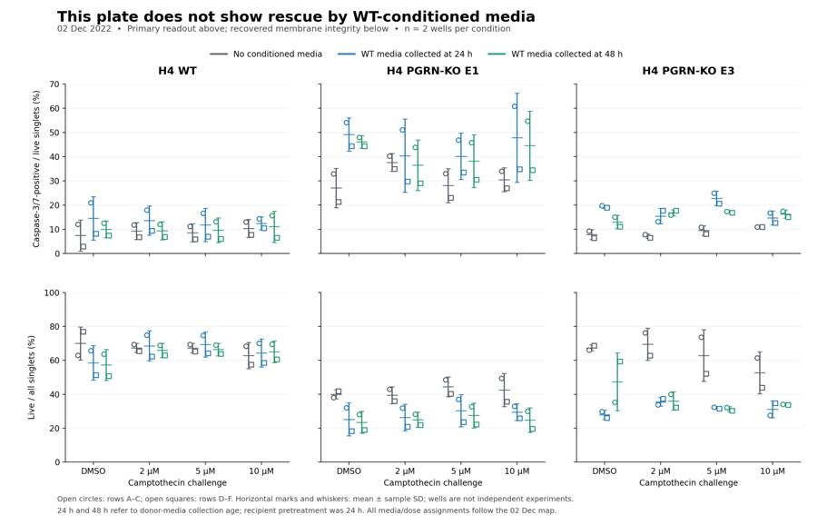
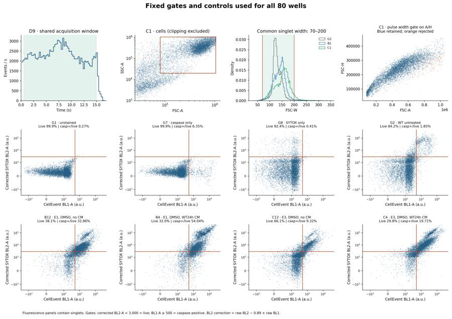
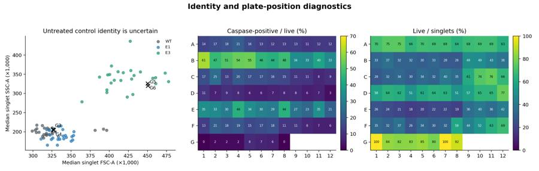
tool call · exec
text(await tools.exec_command({cmd:"cat > /task/outputs/make_deliverables.py <<'PY'\n\"\"\"Write the interpretation, comparison table and machine-readable answer.\"\"\"\nfrom pathlib import Path\nimport json\nimport numpy as np\nimport pandas as pd\nfrom analysis_core import OUTPUT\n\nm=pd.read_csv(OUTPUT/'well_metrics.csv')\ns=pd.read_csv(OUTPUT/'condition_summary.csv').set_index('condition')\nsecondary=pd.read_csv(OUTPUT/'secondary_condition_summary.csv')\nf=pd.read_csv(OUTPUT/'flags.csv')\nq=pd.read_csv(OUTPUT/'qc_metrics.csv')\nDOSES=['DMSO','2uM','5uM','10uM']\nMEDIA=['no_CM','WT24h_CM','WT48h_CM']\nQUESTION='Can WT progranulin-conditioned media bring caspase activity in H4 PGRN-KO E1 and E3 back toward WT levels on the plate acquired 02-Dec-2022?'\ndef cname(cl,dose,media):return f'{cl}_{dose}_{media}'\ndef mean(cl,dose,media):return s.loc[cname(cl,dose,media),'mean']\ndef vals(cond):\n z=m[m.condition==cond].copy();z['block']=z.well.str[0].isin(['D','E','F']).astype(int)\n return z.sort_values('block').caspase_pct_live.to_numpy()\ndef pair_string(cond):\n a=s.loc[cond];return f'{a[\"mean\"]:.2f} ± {a.sd:.2f}'\ndef second(cl,dose,media,metric):\n a=secondary[(secondary.condition==cname(cl,dose,media))&(secondary.metric==metric)].iloc[0]\n return f'{a[\"mean\"]:.2f} ± {a.sd:.2f}'\ncomparisons=[];contrasts=[]\nfor cl in ['E1','E3']:\n for dose in DOSES:\n a=cname('WT',dose,'no_CM');b=cname(cl,dose,'no_CM')\n delta=s.loc[b,'mean']-s.loc[a,'mean'];paired=vals(b)-vals(a)\n direction='increase' if np.all(paired>0) and delta>1 else 'decrease' if np.all(paired<0) and delta< -1 else 'no_clear_change'\n comparisons.append(dict(comparison=f'{cl} versus WT at {dose}, without conditioned media',a=a,b=b,direction=direction,magnitude=f'{delta:+.2f} percentage points in caspase-positive/live singlets ({s.loc[a,\"mean\"]:.2f}% to {s.loc[b,\"mean\"]:.2f}%)',confidence='low'))\n for cm in ['WT24h_CM','WT48h_CM']:\n a=cname(cl,dose,'no_CM');b=cname(cl,dose,cm);delta=s.loc[b,'mean']-s.loc[a,'mean'];paired=vals(b)-vals(a)\n direction='increase' if np.all(paired>0) and delta>1 else 'decrease' if np.all(paired<0) and delta< -1 else 'no_clear_change'\n comparisons.append(dict(comparison=f'{cl}, {dose}: {cm} versus no conditioned media',a=a,b=b,direction=direction,magnitude=f'{delta:+.2f} percentage points in caspase-positive/live singlets ({s.loc[a,\"mean\"]:.2f}% to {s.loc[b,\"mean\"]:.2f}%)',confidence='low'))\n excess0=mean(cl,dose,'no_CM')-mean('WT',dose,'no_CM')\n excess1=mean(cl,dose,cm)-mean('WT',dose,cm)\n contrasts.append(dict(cell_line=cl,camptothecin=dose,conditioned_media=cm,a=a,b=b,change_caspase_pp=delta,nominal_pair_1_change_pp=paired[0],nominal_pair_2_change_pp=paired[1],KO_minus_matched_WT_no_CM_pp=excess0,KO_minus_matched_WT_with_CM_pp=excess1,change_in_KO_minus_WT_pp=excess1-excess0))\npd.DataFrame(contrasts).to_csv(OUTPUT/'rescue_contrasts.csv',index=False,float_format='%.10g')\n\ncaveats=[\n 'One experimental plate; only two nominal wells per factorial condition. Independent cultures and donor-media batches are not documented, so event counts do not provide biological replication.',\n 'The 30-Nov and 02-Dec conditioned-media maps differ. This analysis follows the supplied acquisition-day map; the actual application history cannot be verified from FCS data.',\n 'Untreated controls G3/G4 (labeled E3) resemble E1 scatter, while G5/G6 (labeled E1) resemble E3. This is a suspected swap, not a confirmed relabeling; these controls are retained as diagnostic-only conditions.',\n 'E3 without conditioned media is not consistently above matched WT. There is no stable E3 disease-associated excess on this plate against which to demonstrate rescue.',\n 'Many KO conditions have low membrane-intact fractions; medium aspiration before trypsin likely discarded floating cells. The primary readout describes recovered live-gated singlets, not total apoptosis or absolute survival.',\n 'Acquisition spans about 59 minutes, and first nominal WT/E1 rows have systematically higher readouts than their second rows. Plate position, staining/incubation time and acquisition order are confounded.',\n 'Camptothecin exposure duration and final DMSO concentration are not stated; the tested doses do not produce a consistent caspase dose response across lines and media.',\n 'PGRN concentration, activity and conditioned-media fraction are not measured/documented. There are no matched KO-donor or PGRN-depleted media controls, so medium effects cannot be attributed specifically to progranulin.',\n 'The only fluorescence controls are WT, with no genotype/media-matched unstained controls or caspase-inhibitor control. E3 effect sizes depend on the positivity threshold; fluorescence fraction is not calibrated enzyme activity.',\n 'Scatter clipping reaches 9.45% of all events in one well; the shared cells gate excludes clipped events. The no-rescue interpretation persists when clipped scatter events are retained.'\n]\nanswer=dict(\n question=QUESTION,\n comparisons=comparisons,\n overall_answer='no: This plate does not demonstrate restoration toward WT. Conditioned media increases the mean caspase-positive fraction in 15 of 16 KO comparisons and lowers the recovered live fraction in all 16. E1 remains above matched WT; E3 has no consistent excess over WT before media treatment. This is absence of demonstrated rescue under these conditions, not proof that progranulin cannot rescue the phenotype.',\n assay_verdict='needs_optimisation',\n next_action='repeat_with_change',\n next_change={\n 'what':'Conditioned-media exposure and its matched controls',\n 'from':'Replacement with WT media collected at 24 or 48 hours, followed by 24-hour recipient exposure; the CM fraction and PGRN concentration were not recorded.',\n 'to':'First run a vehicle-only 24-hour pilot using 0%, 25%, 50% and 100% WT conditioned media diluted
… [18,492 more characters not shown]tool output
Script completed
Wall time 0.8 seconds
Output:
{"chunk_id":"2c9750","wall_time_seconds":0.596571809,"exit_code":0,"original_token_count":44,"output":"Wrote report.md, answer.json, rescue_contrasts.csv and README.txt\nComparison directions: {'increase': 18, 'no_clear_change': 5, 'decrease': 1}\nAll-singlet CM differences: []\n"}23
agent
The report recommends a defined conditioned-media dilution pilot with matched conditioning controls before repeating the rescue test. That targets the increased caspase signal and poorer live-cell recovery already seen in DMSO wells. I’m now verifying that the saved XML reproduces every reported count and that the summaries, flags and JSON agree.
tool call · exec
text(await tools.exec_command({cmd:"cat > /task/outputs/validate_outputs.py <<'PY'\n\"\"\"Independent deliverable/schema checks and fresh FlowKit recount of all 80 files.\"\"\"\nfrom pathlib import Path\nimport json, re, hashlib, importlib.metadata\nimport numpy as np, pandas as pd\nimport flowkit as fk\nfrom PIL import Image\n\nI=Path('/task/inputs'); O=Path('/task/outputs')\nlayout=pd.read_csv(I/'plate_layout.csv'); counts=pd.read_csv(O/'counts.csv');flags=pd.read_csv(O/'flags.csv');summary=pd.read_csv(O/'condition_summary.csv');metrics=pd.read_csv(O/'well_metrics.csv');answer=json.loads((O/'answer.json').read_text())\nassert list(counts)==['file','well','population','role','parent','count','pct_of_parent']\nassert list(flags)==['file','well','issue_type','evidence','decision']\nassert list(summary)==['condition','wells','n_wells_used','mean','sd','metric_definition','normalisation_applied']\nassert len(layout)==80 and len(flags)==80 and flags.file.nunique()==80 and flags.well.nunique()==80\nassert set(layout.file)==set(flags.file)==set(counts.file)\nassert set(layout.well)==set(flags.well)==set(counts.well)\nassert all(flags[['file','well']].merge(layout[['file','well']],on='file',suffixes=('_flag','_input')).eval('well_flag == well_input'))\nassert set(flags.issue_type)<=set(['none','clog','ran_dry','too_few_events','saturation','bad_control','mislabel','other'])\nassert set(flags.decision)<=set(['keep','keep_with_note','exclude'])\nassert (flags.loc[flags.issue_type=='none','decision']=='keep').all()\nfor r in flags[flags.issue_type!='none'].itertuples():\n assert isinstance(r.evidence,str) and re.search(r'\\d',r.evidence)\nassert set(counts.role)<=set(['cells','singlets','live','marker_positive','other'])\nfor role in ['cells','singlets','live','marker_positive']:\n x=counts[counts.role==role]\n assert x.population.nunique()==1 and len(x)==80\nassert counts.groupby('file').population.apply(tuple).nunique()==1\nassert counts[['file','population']].duplicated().sum()==0\nassert np.equal(counts['count'],np.floor(counts['count'])).all()\nassert (counts['count']>=0).all()\nallrows=counts[counts.population=='all_events'];assert len(allrows)==80\nassert (allrows.role=='other').all() and (allrows.parent=='none').all() and allrows.pct_of_parent.isna().all()\ngs=fk.parse_gating_xml('/task/outputs/gates.xml')\ngate_ids=gs.get_gate_ids()\nassert set(name for name,path in gate_ids)==set(counts.population)\nfor name,path in gate_ids:\n assert re.fullmatch(r'[A-Za-z][A-Za-z0-9_]*',name)\n gate=gs.get_gate(name,path)\n assert isinstance(gate,(fk.gates.RectangleGate,fk.gates.PolygonGate,fk.gates.EllipsoidGate))\n assert all(dim.compensation_ref for dim in gate.dimensions)\n parent='none' if len(path)==1 else path[-1]\n assert set(counts.loc[counts.population==name,'parent'])=={parent}\nfor row in layout.itertuples():\n sample=fk.Sample(str(I/'raw'/row.file));r=gs.gate_sample(sample)\n g=counts[counts.file==row.file].set_index('population')\n for pop,record in g.iterrows():\n assert int(record['count'])==r.get_gate_count(pop),(row.well,pop)\n assert record.well==row.well\n if pop!='all_events':\n nparent=g.loc[record.parent,'count']\n assert record['count']<=nparent\n assert np.isclose(record.pct_of_parent,100*record['count']/nparent,rtol=1e-8,atol=1e-8)\n assert g.loc['all_events','count']==sample.event_count\n md=sample.get_metadata()\n assert md['wellid']==row.well and md['date']=='02-Dec-2022'\nassert len(summary)==42 and summary.condition.nunique()==42\nassert summary.n_wells_used.sum()==80\nused=[]\nfor row in summary.itertuples():\n wells=row.wells.split(';');used.extend(wells)\n assert len(wells)==row.n_wells_used\n assert not set(wells)&set(flags.loc[flags.decision=='exclude','well'])\n vals=[]\n for w in wells:\n c=counts[counts.well==w].set_index('population')['count']\n vals.append(100*c['caspase_positive']/c['live'])\n assert np.isclose(row.mean,np.mean(vals),rtol=1e-8,atol=1e-8)\n if len(vals)>1:assert np.isclose(row.sd,np.std(vals,ddof=1),rtol=1e-8,atol=1e-8)\n else:assert pd.isna(row.sd)\n assert row.normalisation_applied=='none'\nassert sorted(used)==sorted(layout.well)\nassert answer['overall_answer'].startswith(('yes:','partial:','no:'))\nassert answer['assay_verdict'] in ['fit_for_purpose','needs_optimisation','not_fit_for_purpose']\nassert answer['next_action'] in ['proceed_as_planned','repeat_unchanged','repeat_with_change','optimise_reagent_or_setting','change_treatment_or_timing','switch_assay','stop']\nassert set(answer['next_change'])==set(['what','from','to','why'])\nassert set(answer['excluded_wells'])==set(flags.loc[flags.decision=='exclude','well'])\nassert len(answer['comparisons'])>=1\nss=summary.set_index('condition')\nfor c in answer['comparisons']:\n assert c['a'] in ss.index and c['b'] in ss.index\n assert c['direction'] in ['increase','decrease','no_clear_change']\n delta=ss.loc[c['b'],'mean']-ss.loc[c['a'],'mean']\n if c['direction']=='increase':assert delta>0\n if c['direction']=='decrease':assert delta<0\n assert c['confidence'] in ['high','medium','low']\n reported=float(c['magnitude'].split(' ')[0]);assert np.isclose(reported,delta,atol=.0051)\nassert re.findall(r'^## .+$',(O/'report.md').read_text(),flags=re.M)==['## Question','## Methods','## Results','## Conclusion','## Caveats','## Recommendation']\nfor name in ['figure.png','gating_qc.png','plate_qc.png','supplementary_readouts.png']:\n im=Image.open(O/name);im.verify()\nchecks={'status':'passed','files_recounted':80,'populations_per_file':9,'count_rows':len(counts),'flag_rows':len(flags),'conditions':len(summary),'experimental_conditions':36,'control_conditions':6,'comparisons':len(answer['comparisons']),'excluded_wells':answer['excluded_wells'],'gatingml_roundtrip':'passed','saved_gate_recount':'all 720 counts exactly reproduced','parent_pe
… [1,771 more characters not shown]tool output
Script completed
Wall time 1.4 seconds
Output:
{"chunk_id":"d29a2e","wall_time_seconds":1.0009299,"session_id":84111,"original_token_count":0,"output":""}
{"chunk_id":"8588ea","wall_time_seconds":0.115164918,"exit_code":0,"original_token_count":396,"output":"DMSO results:\n condition wells mean sd\nWT_DMSO_WT24h_CM A4;D4 14.564 8.988\nWT_DMSO_WT48h_CM A8;D8 10.027 3.526\n WT_DMSO_no_CM A12;D12 7.441 6.485\nE1_DMSO_WT24h_CM B4;E4 49.178 6.881\nE1_DMSO_WT48h_CM B8;E8 46.135 2.578\n E1_DMSO_no_CM B12;E12 27.112 8.131\nE3_DMSO_WT24h_CM C4;F4 19.298 0.589\nE3_DMSO_WT48h_CM C8;F8 13.036 2.803\n E3_DMSO_no_CM C12;F12 7.838 2.089\nFlags:\nissue_type decision \nmislabel keep_with_note 4\nnone keep 21\nother keep_with_note 29\nsaturation keep_with_note 26\ndtype: int64\nRecommendation repeat_with_change {'what': 'Conditioned-media exposure and its matched controls', 'from': 'Replacement with WT media collected at 24 or 48 hours, followed by 24-hour recipient exposure; the CM fraction and PGRN concentration were not recorded.', 'to': 'First run a vehicle-only 24-hour pilot using 0%, 25%, 50% and 100% WT conditioned media diluted in fresh complete H4 medium, testing both donor collection ages in WT, E1 and E3. Include matched KO-donor conditioned media at the same fractions, equalize vehicle/handling, and measure PGRN in each donor batch.', 'why': 'Even without camptothecin, WT conditioned media raises KO caspase positivity and lowers the recovered live fraction. Establish a tolerable, defined media exposure and distinguish PGRN-dependent effects from conditioning/nutrient effects before another rescue experiment.'}\nExpected deliverables:\ngates.xml 3683\ncounts.csv 63969\nflags.csv 25679\ncondition_summary.csv 7101\nfigure.png 258307\nreport.md 16157\nanswer.json 10774\n"}tool call · exec
const r=await Promise.allSettled([
tools.write_stdin({session_id:84111,chars:"",yield_time_ms:1000,max_output_tokens:4000}),
tools.exec_command({cmd:"du -sh /task/outputs && rg --files /task/outputs","max_output_tokens":3000})
]);r.forEach((v,i)=>text({i,...v}));
const im=await tools.view_image({path:"/task/outputs/supplementary_readouts.png"});image(im.image_url);
tool output
Script completed Wall time 0.1 seconds Output:
{"i":0,"status":"fulfilled","value":{"chunk_id":"178088","wall_time_seconds":0.00000547,"exit_code":0,"original_token_count":122,"output":"{\n \"status\": \"passed\",\n \"files_recounted\": 80,\n \"populations_per_file\": 9,\n \"count_rows\": 720,\n \"flag_rows\": 80,\n \"conditions\": 42,\n \"experimental_conditions\": 36,\n \"control_conditions\": 6,\n \"comparisons\": 24,\n \"excluded_wells\": [],\n \"gatingml_roundtrip\": \"passed\",\n \"saved_gate_recount\": \"all 720 counts exactly reproduced\",\n \"parent_percentages\": \"passed\",\n \"summary_recalculation\": \"passed\",\n \"json_references_and_directions\": \"passed\",\n \"report_headings\": \"passed\"\n}\n"}}{"i":1,"status":"fulfilled","value":{"chunk_id":"afe3cd","wall_time_seconds":0.00000462,"exit_code":0,"original_token_count":360,"output":"11M\t/task/outputs\n/task/outputs/plate_qc.png\n/task/outputs/gate_sensitivity_comparisons.csv\n/task/outputs/explore_doublets.png\n/task/outputs/flags.csv\n/task/outputs/make_figures.py\n/task/outputs/development_compensation.png\n/task/outputs/README.txt\n/task/outputs/report.md\n/task/outputs/gate_sensitivity_conditions.csv\n/task/outputs/rescue_contrasts.csv\n/task/outputs/development_medians.csv\n/task/outputs/explore_scatter.png\n/task/outputs/provenance.json\n/task/outputs/figure.png\n/task/outputs/validate_outputs.py\n/task/outputs/supplementary_readouts.png\n/task/outputs/counts.csv\n/task/outputs/well_metrics.csv\n/task/outputs/make_deliverables.py\n/task/outputs/gate_sensitivity_wells.csv\n/task/outputs/validation.json\n/task/outputs/development_singlets.png\n/task/outputs/secondary_condition_summary.csv\n/task/outputs/analysis_run.log\n/task/outputs/preliminary_metrics.py\n/task/outputs/condition_summary.csv\n/task/outputs/qc_metrics.csv\n/task/outputs/answer.json\n/task/outputs/explore.py\n/task/outputs/explore_fluorescence.png\n/task/outputs/explore_controls.png\n/task/outputs/analyse_plate.py\n/task/outputs/preliminary_metrics.csv\n/task/outputs/explore_time.png\n/task/outputs/gating_qc.png\n/task/outputs/raw_qc.csv\n/task/outputs/sensitivity.py\n/task/outputs/gates.xml\n/task/outputs/development_compensated_controls.png\n/task/outputs/gate_development.py\n/task/outputs/analysis_core.py\n/task/outputs/__pycache__/analysis_core.cpython-312.pyc\n"}}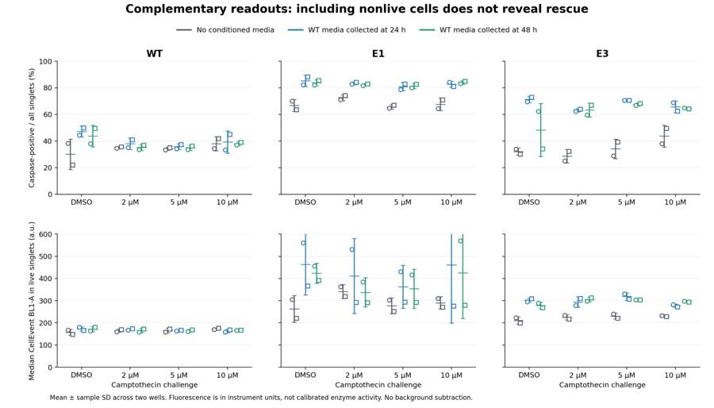
tool call · exec
text(await tools.apply_patch("*** Begin Patch\n*** Update File: /task/outputs/make_figures.py\n@@\n- result_panel(axs[1,j],cl,'median_BL1_live',(0,600),j==0)\n+ result_panel(axs[1,j],cl,'median_BL1_live',(0,800),j==0)\n*** End Patch"));
text(await tools.exec_command({cmd:"python /task/outputs/make_figures.py","yield_time_ms":1000,"max_output_tokens":1000}));
text(await tools.exec_command({cmd:"python - <<'PY'\nfrom pathlib import Path\nimport pandas as pd\nO=Path('/task/outputs')\ns=pd.read_csv(O/'secondary_condition_summary.csv');s=s[s.metric=='median_BL1_live']\nprint('Largest live-median mean+SD:',(s['mean']+s['sd']).max())\nprint('Largest observed live median:',pd.read_csv(O/'well_metrics.csv').median_BL1_live.max())\ntext=(O/'report.md').read_text()\nprint('Report word count:',len(text.split()))\nPY","max_output_tokens":1000}));
tool output
Script completed
Wall time 1.4 seconds
Output:
{}
{"chunk_id":"c5b95e","wall_time_seconds":1.001661071,"session_id":22836,"original_token_count":0,"output":""}
{"chunk_id":"3fc385","wall_time_seconds":0.044617064,"exit_code":0,"original_token_count":26,"output":"Largest live-median mean+SD: 723.7330624\nLargest observed live median: 647.0\nReport word count: 2463\n"}tool call · exec
text(await tools.write_stdin({session_id:22836,chars:"",yield_time_ms:1000,max_output_tokens:1500}));
const im=await tools.view_image({path:"/task/outputs/supplementary_readouts.png"}); image(im.image_url);
text(await tools.exec_command({cmd:"python - <<'PY'\nfrom pathlib import Path\nimport json,hashlib,zipfile\nfrom PIL import Image\nO=Path('/task/outputs')\n# Recheck the revised plot and refresh provenance after the display-only edit.\nImage.open(O/'supplementary_readouts.png').verify()\np=json.loads((O/'provenance.json').read_text())\nfor name in p['primary_output_sha256']:\n p['primary_output_sha256'][name]=hashlib.sha256((O/name).read_bytes()).hexdigest()\np['analysis_scripts_sha256']={x.name:hashlib.sha256(x.read_bytes()).hexdigest() for x in sorted(O.glob('*.py'))}\n(O/'provenance.json').write_text(json.dumps(p,indent=2)+'\\n')\nwith zipfile.ZipFile(O/'results_bundle.zip','w',compression=zipfile.ZIP_DEFLATED) as z:\n for path in sorted(O.rglob('*')):\n if path.is_file() and path.name!='results_bundle.zip' and '__pycache__' not in path.parts:\n z.write(path,path.relative_to(O))\nwith zipfile.ZipFile(O/'results_bundle.zip') as z:\n assert z.testzip() is None\n print('Bundle verified:',len(z.namelist()),'files,',round((O/'results_bundle.zip').stat().st_size/1024/1024,2),'MiB')\nprint('Validation:',json.loads((O/'validation.json').read_text())['status'])\nPY","max_output_tokens":1000}));
tool output
Script completed Wall time 0.3 seconds Output:
{"chunk_id":"163d74","wall_time_seconds":0.00000383,"exit_code":0,"original_token_count":19,"output":"Saved figure.png, supplementary_readouts.png, gating_qc.png, plate_qc.png\n"}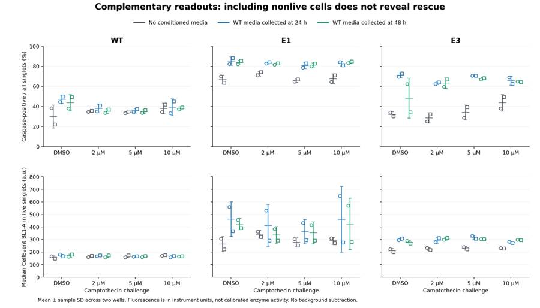
{"chunk_id":"a8eb8f","wall_time_seconds":0.164015917,"exit_code":0,"original_token_count":14,"output":"Bundle verified: 41 files, 9.6 MiB\nValidation: passed\n"}27
agent
**No rescue demonstrated on this plate.** Conditioned media generally increased caspase positivity and lowered the live fraction. E1 remained elevated; E3 lacked a consistent starting elevation over WT.
Recommend a defined conditioned-media dilution pilot with matched controls before repeating the rescue experiment.
All deliverables are saved. The XML reloads and reproduces all 720 counts exactly; no wells were excluded.
[Report](/task/outputs/report.md) · [Figure](/task/outputs/figure.png) · [Complete results bundle](/task/outputs/results_bundle.zip)